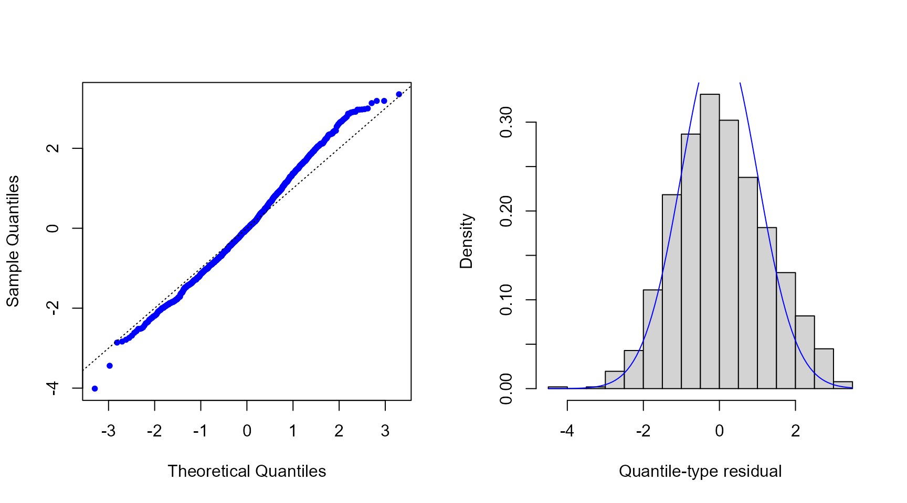

Introduction to the mtarm Package
Luis Hernando Vanegas
Sergio Alejandro Calderón
Luz Marina Rondón
Source:vignettes/Introduction.Rmd
Introduction.RmdMultivariate Threshold Autoregressive (TAR) models
The mtarm package provides a computational tool designed
for Bayesian estimation, inference, and forecasting in multivariate
Threshold Autoregressive (TAR) models. These models provide a versatile
approach for modeling nonlinear multivariate time series and include
multivariate Self-Exciting Threshold Autoregressive (SETAR) and Vector
Autoregressive (VAR) models as particular cases (Vanegas, Calderón V, and Rondón 2025). The
package accommodates a broad class of innovation distributions beyond
the Gaussian assumption, such as
Student-,
slash, symmetric hyperbolic, Laplace, contaminated normal, skew-normal,
and
skew-
distributions, thereby enabling robust modeling of heavy tails,
asymmetry, and other non-Gaussian characteristics.
Installation
Install from GitHub
remotes::install_github("lhvanegasp/mtarm")Install from CRAN
install.packages("mtarm")Application: Temperature, precipitation, and two river flows in Iceland
Dataset
The data are available in the object `iceland.rf` and were obtained from (Tong 1990), who provided a detailed description of the geographical and meteorological characteristics of the rivers and analyzed each series individually. Subsequently, (Tsay 1998) conducted a bivariate analysis of the same dataset. The focus is on the bivariate time series , where and denote the daily river flow (in cubic meters per second, ) of the Jökulsá Eystri and Vatnsdalsá rivers, respectively. The sample covers the period from 1972 to 1974, comprising 1095 observations. The exogenous variables include daily precipitation , measured in millimeters (), and temperature , measured in degrees Celsius (), both recorded at the meteorological station in Hveravellir. Precipitation corresponds to the accumulated rainfall from 9:00 A.M. of the previous day to 9:00 A.M. of the current day.
library(mtarm)
data(iceland.rf)
str(iceland.rf)
#> 'data.frame': 1096 obs. of 5 variables:
#> $ Vatnsdalsa : num 16.1 19.2 14.5 11 13.6 12.5 10.5 10.1 9.68 9.02 ...
#> $ Jokulsa : num 30.2 29 28.4 27.8 27.8 27.8 27.8 27.8 27.8 27.3 ...
#> $ Precipitation: num 8.1 4.4 7 0 0 0 1.9 1.2 0 0.1 ...
#> $ Temperature : num 0.9 1.6 0.1 0.6 2 0.8 1.4 1.3 2.2 0.1 ...
#> $ Date : Date, format: "1972-01-01" "1972-01-02" ...
summary(iceland.rf[,-5])
#> Vatnsdalsa Jokulsa Precipitation Temperature
#> Min. : 3.670 Min. : 22.00 Min. : 0.000 Min. :-22.4000
#> 1st Qu.: 6.100 1st Qu.: 26.70 1st Qu.: 0.000 1st Qu.: -4.2000
#> Median : 7.500 Median : 31.40 Median : 0.300 Median : 0.3000
#> Mean : 8.938 Mean : 41.15 Mean : 2.519 Mean : -0.4407
#> 3rd Qu.: 9.240 3rd Qu.: 50.90 3rd Qu.: 2.500 3rd Qu.: 3.9000
#> Max. :54.000 Max. :143.00 Max. :79.300 Max. : 13.9000
Model specification
Following (Tsay 1998), the series are modeled using a specification given by
$$Y_t=\sum\limits_{j=1}^2 I(Z_{t-h}\in(c_{j-1},c_j])\Big(\!{\phi}_0^{^{(j)}}+\sum\limits_{i=1}^{15}\boldsymbol{\phi}_i^{^{(j)}}Y_{t-i}+\sum\limits_{i=1}^{4}\boldsymbol{\beta}_i^{^{(j)}}\!X_{t-i}+\sum\limits_{i=1}^{2}{\delta}_i^{^{(j)}}\!Z_{t-i}+\epsilon_t^{^{(j)}}\!\Big),$$
where is the error term. The last 55 observations (from November 7 to December 31, 1974), corresponding to of the sample, are excluded from the estimation stage and reserved for out-of-sample forecast evaluation. The following code requests the estimation for the specification under Gaussian, Hyperbolic, Student-, and Laplace error distributions.
Parameter estimation
fits <- mtar_grid(~ Jokulsa + Vatnsdalsa | Temperature | Precipitation,
data=iceland.rf, subset={Date<="1974-11-06"},
row.names=Date, nregim.min=2, nregim.max=2, p.min=15,
p.max=15, q.min=4, q.max=4, d.min=2, d.max=2,
n.burnin=2000, n.sim=3000, n.thin=2, ssvs=TRUE,
dist=c("Gaussian","Hyperbolic","Student-t","Laplace"),
plan_strategy="multisession")
fits
#>
#>
#> Sample size :1026 time points (1972-01-16 to 1974-11-06)
#>
#> Output Series :Jokulsa | Vatnsdalsa
#>
#> Threshold Series (TS):Temperature with a estimated delay equal to 0
#>
#> Exogenous Series (ES):Precipitation
#>
#> Error Distribution :Gaussian
#>
#> Number of regimes :2 to 2
#>
#> Deterministics :Intercept
#>
#> Autoregressive orders:15 to 15
#>
#> Maximum lags for ES :4 to 4
#>
#> Maximum lags for TS :2 to 2Model comparison using forecast accuracy measures
Adjusted within-sample
The following code requests Deviance Information Criterion (DIC) (Spiegelhalter et al. 2002, 2014) and Watanabe-Akaike Information Criterion (WAIC) (Watanabe 2010) values.
Out-of-sample
In addition, the following code provides the median of the log-score (Good 1952), the Energy Score (ES) (Gneiting et al. 2008)—a multivariate extension of the Continuous Ranked Probability Score (CRPS)(Matheson and Winkler 1976; Grimit et al. 2006)—and the Absolute Percentage Error (APE), all computed from the observed and forecasted values for the last 55 observations.
newdata <- subset(iceland.rf, Date>"1974-11-06")
oos <- out_of_sample(fits, newdata=newdata, n.ahead=nrow(newdata), FUN=median)
oos[,c(1,2,5,6)]
#> Log.Score Energy.Score Jokulsa.APE Vatnsdalsa.APE
#> Gaussian.2.15.4.2 3.075137 1.651053 4.869898 19.30879
#> Hyperbolic.2.15.4.2 3.658305 2.672748 4.434512 19.20354
#> Laplace.2.15.4.2 3.327719 1.948534 4.086139 20.23085
#> Student-t.2.15.4.2 3.614012 2.564962 3.457262 21.97248Residuals
res <- residuals(fits$`Student-t.2.15.4.2`)
par(mfrow=c(1,2))
qqnorm(res$full, pch=20, col="blue", main="")
abline(0, 1, lty=3)
hist(res$full, freq=FALSE, xlab="Quantile-type residual", ylab="Density", main="")
curve(dnorm(x), col="blue", add=TRUE)

Forecasting
pred <- predict(fits$`Student-t.2.15.4.2`, newdata=newdata, n.ahead=nrow(newdata),
row.names=Date, credible=0.8)
head(pred$summary)
#> Jokulsa.Mean Jokulsa.Lower Jokulsa.Upper Vatnsdalsa.Mean
#> 1974-11-07 27.29220 26.00292 28.74858 7.676216
#> 1974-11-08 27.12639 25.06388 29.00210 7.729413
#> 1974-11-09 27.00859 24.45987 29.23975 7.606384
#> 1974-11-10 26.87594 23.95955 29.37426 7.459377
#> 1974-11-11 26.69192 23.90007 29.62159 7.282105
#> 1974-11-12 26.56980 23.47605 29.31722 7.170445
#> Vatnsdalsa.Lower Vatnsdalsa.Upper
#> 1974-11-07 6.774612 8.481425
#> 1974-11-08 6.352373 9.154592
#> 1974-11-09 5.945956 9.554690
#> 1974-11-10 5.341861 9.532677
#> 1974-11-11 4.993045 9.675904
#> 1974-11-12 4.631641 9.579189
tail(pred$summary)
#> Jokulsa.Mean Jokulsa.Lower Jokulsa.Upper Vatnsdalsa.Mean
#> 1974-12-26 25.82089 22.43201 28.92138 6.288880
#> 1974-12-27 25.85609 22.75000 29.23778 6.276369
#> 1974-12-28 25.85820 22.98569 29.38073 6.264063
#> 1974-12-29 25.85244 22.80934 29.47181 6.305370
#> 1974-12-30 25.87605 22.55572 29.14477 6.371485
#> 1974-12-31 25.86506 22.51496 29.24439 6.387262
#> Vatnsdalsa.Lower Vatnsdalsa.Upper
#> 1974-12-26 3.049445 9.496635
#> 1974-12-27 2.914952 9.276669
#> 1974-12-28 3.144862 9.588426
#> 1974-12-29 2.760263 9.127115
#> 1974-12-30 3.061918 9.498120
#> 1974-12-31 3.197604 9.621662Forecasting with out-of-sample measures
pred.oos <- predict(fits$`Student-t.2.15.4.2`, newdata=newdata, n.ahead=nrow(newdata),
credible=0.8, out.of.sample=TRUE)
pred.oos
#> $summary
#> Jokulsa.Mean Jokulsa.Lower Jokulsa.Upper Vatnsdalsa.Mean Vatnsdalsa.Lower
#> 1 27.32707 26.09351 28.62930 7.615095 6.798271
#> 2 27.14578 25.07717 28.91445 7.639108 6.210523
#> 3 26.94922 24.44703 29.11039 7.507988 5.569287
#> 4 26.76354 24.22168 29.47983 7.341926 5.349823
#> 5 26.57587 23.74652 29.38503 7.178080 4.852004
#> 6 26.42847 23.52856 29.45013 7.011972 4.610002
#> 7 26.30327 23.35814 29.29721 6.881637 4.431343
#> 8 26.23724 23.07827 29.44403 6.761716 4.094319
#> 9 26.22927 23.32899 29.49899 6.674895 3.908781
#> 10 26.19254 22.96019 29.35831 6.624276 3.764055
#> 11 26.08637 22.87104 29.33334 6.544923 3.584385
#> 12 26.03747 22.52439 28.99863 6.480333 3.580724
#> 13 25.98113 22.35792 28.88750 6.441741 3.709325
#> 14 25.95067 22.78204 29.26968 6.422468 3.241819
#> 15 25.88399 22.41938 28.93313 6.386490 3.382892
#> 16 25.82148 22.95451 29.43783 6.328171 3.458587
#> 17 25.85810 22.91271 29.29047 6.263004 3.354870
#> 18 25.79894 22.60336 29.00157 6.225955 3.203880
#> 19 25.74948 22.93508 29.31564 6.176079 3.075214
#> 20 25.76496 22.79020 29.10180 6.174545 3.035507
#> 21 25.78988 22.60490 28.96097 6.173442 3.100523
#> 22 25.73943 22.83409 29.47551 6.160040 3.478464
#> 23 25.86038 22.99180 29.67519 6.105364 2.951381
#> 24 25.84612 22.54870 29.13431 6.110714 3.146361
#> 25 25.84425 22.72049 29.31601 6.137504 3.297882
#> 26 25.81378 22.60195 29.07748 6.125574 2.828306
#> 27 25.89084 22.86010 29.37146 6.171168 3.085146
#> 28 25.87612 22.84948 29.21070 6.190848 3.200447
#> 29 25.83354 22.53003 28.88476 6.188024 3.126185
#> 30 25.82797 22.69640 29.21985 6.216900 3.006880
#> 31 25.89160 23.08547 29.48192 6.252821 3.045863
#> 32 25.85377 22.74608 29.34027 6.254974 2.902070
#> 33 25.88265 22.56708 29.10825 6.248450 3.246207
#> 34 25.79748 22.47782 29.04360 6.244125 3.275130
#> 35 25.82149 22.46791 29.09529 6.231531 3.105830
#> 36 25.50578 22.50994 29.09644 6.132894 2.975606
#> 37 25.54580 22.62642 29.26012 6.144538 2.653229
#> 38 25.61371 22.73774 29.49303 6.187375 2.774167
#> 39 25.73577 22.70942 29.33214 6.192263 3.181402
#> 40 25.75595 22.56230 29.09080 6.198827 2.935662
#> 41 25.82416 22.93483 29.44138 6.214538 2.969279
#> 42 25.89563 22.63364 29.16209 6.241262 2.701598
#> 43 25.90746 22.82323 29.52818 6.229382 2.554441
#> 44 25.90434 22.66125 29.25652 6.264527 3.034853
#> 45 25.84004 22.42270 29.13448 6.210249 2.906891
#> 46 25.85677 22.31405 28.78111 6.180708 2.780714
#> 47 25.79816 22.52891 29.07564 6.173746 2.858691
#> 48 25.80142 22.61603 28.93184 6.175528 3.142162
#> 49 25.82292 22.48018 28.99253 6.191485 2.785351
#> 50 25.87785 22.51204 28.96438 6.216167 2.923879
#> 51 25.92074 22.72680 29.15852 6.256372 3.120043
#> 52 25.96186 22.68934 29.00118 6.292328 3.051368
#> 53 25.90143 22.49605 29.04050 6.306682 2.838152
#> 54 25.86458 22.52498 28.99468 6.289435 3.149632
#> 55 25.88134 22.92945 29.24335 6.208593 2.842867
#> Vatnsdalsa.Upper
#> 1 8.440259
#> 2 8.968162
#> 3 9.123895
#> 4 9.590179
#> 5 9.691317
#> 6 9.658737
#> 7 9.685913
#> 8 9.695083
#> 9 9.619737
#> 10 9.569882
#> 11 9.597904
#> 12 9.635237
#> 13 9.808418
#> 14 9.373469
#> 15 9.557260
#> 16 9.614669
#> 17 9.460998
#> 18 9.439938
#> 19 9.397890
#> 20 9.373635
#> 21 9.485369
#> 22 9.900163
#> 23 9.294958
#> 24 9.402964
#> 25 9.632030
#> 26 9.253399
#> 27 9.549383
#> 28 9.678976
#> 29 9.605566
#> 30 9.555916
#> 31 9.565688
#> 32 9.303767
#> 33 9.652614
#> 34 9.658371
#> 35 9.560904
#> 36 9.560184
#> 37 9.321716
#> 38 9.426968
#> 39 9.824905
#> 40 9.534549
#> 41 9.568361
#> 42 9.180007
#> 43 9.140860
#> 44 9.434341
#> 45 9.371426
#> 46 9.298940
#> 47 9.454807
#> 48 9.721100
#> 49 9.336883
#> 50 9.537978
#> 51 9.674024
#> 52 9.536266
#> 53 9.372313
#> 54 9.571208
#> 55 9.381620
#>
#> $output.series
#> Jokulsa Vatnsdalsa
#> 1972-01-16 26.7 7.92
#> 1972-01-17 26.7 7.71
#> 1972-01-18 26.7 7.10
#> 1972-01-19 26.7 6.70
#> 1972-01-20 25.2 3.98
#> 1972-01-21 25.7 5.16
#> 1972-01-22 26.2 6.10
#> 1972-01-23 26.2 6.90
#> 1972-01-24 26.2 6.90
#> 1972-01-25 26.2 7.10
#> 1972-01-26 25.7 7.30
#> 1972-01-27 26.2 7.30
#> 1972-01-28 26.7 5.71
#> 1972-01-29 28.4 6.90
#> 1972-01-30 29.0 8.14
#> 1972-01-31 27.8 7.50
#> 1972-02-01 27.3 7.10
#> 1972-02-02 26.7 6.90
#> 1972-02-03 26.2 6.70
#> 1972-02-04 25.7 6.70
#> 1972-02-05 26.2 6.90
#> 1972-02-06 26.2 6.90
#> 1972-02-07 25.7 6.70
#> 1972-02-08 25.7 6.50
#> 1972-02-09 25.7 6.50
#> 1972-02-10 25.7 6.70
#> 1972-02-11 25.7 6.90
#> 1972-02-12 25.7 7.10
#> 1972-02-13 25.7 6.70
#> 1972-02-14 25.2 6.70
#> 1972-02-15 25.2 6.70
#> 1972-02-16 25.2 6.90
#> 1972-02-17 24.6 5.34
#> 1972-02-18 25.2 5.34
#> 1972-02-19 25.7 5.90
#> 1972-02-20 26.7 6.30
#> 1972-02-21 26.2 6.90
#> 1972-02-22 25.7 7.92
#> 1972-02-23 26.7 21.00
#> 1972-02-24 26.7 14.20
#> 1972-02-25 26.7 11.60
#> 1972-02-26 26.2 10.10
#> 1972-02-27 25.7 9.24
#> 1972-02-28 25.7 8.58
#> 1972-02-29 25.2 8.14
#> 1972-03-01 25.2 7.92
#> 1972-03-02 25.2 7.71
#> 1972-03-03 24.6 7.71
#> 1972-03-04 24.6 7.50
#> 1972-03-05 24.6 7.10
#> 1972-03-06 24.6 6.90
#> 1972-03-07 24.6 6.90
#> 1972-03-08 24.6 6.90
#> 1972-03-09 23.6 6.50
#> 1972-03-10 24.1 7.71
#> 1972-03-11 24.1 4.65
#> 1972-03-12 24.6 3.98
#> 1972-03-13 24.1 5.16
#> 1972-03-14 24.6 6.10
#> 1972-03-15 24.6 6.10
#> 1972-03-16 25.7 8.14
#> 1972-03-17 28.4 13.60
#> 1972-03-18 31.4 9.68
#> 1972-03-19 30.2 8.36
#> 1972-03-20 29.0 9.24
#> 1972-03-21 28.4 8.58
#> 1972-03-22 27.8 8.36
#> 1972-03-23 26.7 7.92
#> 1972-03-24 26.7 9.02
#> 1972-03-25 27.8 9.02
#> 1972-03-26 26.7 8.15
#> 1972-03-27 26.2 7.92
#> 1972-03-28 25.2 7.50
#> 1972-03-29 25.2 7.30
#> 1972-03-30 25.2 6.90
#> 1972-03-31 24.6 6.90
#> 1972-04-01 25.2 7.50
#> 1972-04-02 25.2 6.70
#> 1972-04-03 24.1 6.70
#> 1972-04-04 24.1 6.90
#> 1972-04-05 24.6 6.70
#> 1972-04-06 24.1 6.50
#> 1972-04-07 24.1 6.30
#> 1972-04-08 24.1 6.30
#> 1972-04-09 24.1 6.30
#> 1972-04-10 23.6 6.30
#> 1972-04-11 23.6 6.10
#> 1972-04-12 23.6 5.90
#> 1972-04-13 23.6 6.50
#> 1972-04-14 23.6 6.30
#> 1972-04-15 23.6 6.10
#> 1972-04-16 23.6 7.10
#> 1972-04-17 24.1 8.14
#> 1972-04-18 24.1 9.90
#> 1972-04-19 24.1 14.20
#> 1972-04-20 25.2 16.50
#> 1972-04-21 25.2 19.20
#> 1972-04-22 26.7 23.50
#> 1972-04-23 30.2 25.20
#> 1972-04-24 41.7 35.90
#> 1972-04-25 51.7 31.50
#> 1972-04-26 44.0 19.20
#> 1972-04-27 41.0 16.90
#> 1972-04-28 35.7 13.60
#> 1972-04-29 30.8 11.00
#> 1972-04-30 27.8 10.10
#> 1972-05-01 29.0 9.90
#> 1972-05-02 29.0 10.10
#> 1972-05-03 28.4 10.30
#> 1972-05-04 27.8 13.00
#> 1972-05-05 34.4 20.10
#> 1972-05-06 47.0 24.10
#> 1972-05-07 59.1 36.70
#> 1972-05-08 101.0 32.90
#> 1972-05-09 103.0 28.70
#> 1972-05-10 90.0 31.50
#> 1972-05-11 113.0 33.70
#> 1972-05-12 121.0 30.80
#> 1972-05-13 104.0 26.30
#> 1972-05-14 94.8 21.50
#> 1972-05-15 77.4 17.30
#> 1972-05-16 83.0 19.20
#> 1972-05-17 81.6 16.90
#> 1972-05-18 80.2 16.10
#> 1972-05-19 81.6 15.60
#> 1972-05-20 90.0 18.00
#> 1972-05-21 103.0 19.70
#> 1972-05-22 111.0 17.70
#> 1972-05-23 109.0 16.90
#> 1972-05-24 103.0 19.70
#> 1972-05-25 99.6 16.90
#> 1972-05-26 91.6 14.80
#> 1972-05-27 66.6 11.30
#> 1972-05-28 59.1 11.30
#> 1972-05-29 52.5 10.10
#> 1972-05-30 51.7 10.10
#> 1972-05-31 53.3 9.90
#> 1972-06-01 52.5 9.24
#> 1972-06-02 52.5 9.02
#> 1972-06-03 58.3 9.46
#> 1972-06-04 64.3 10.10
#> 1972-06-05 67.8 9.90
#> 1972-06-06 78.8 10.80
#> 1972-06-07 66.6 9.68
#> 1972-06-08 55.7 9.24
#> 1972-06-09 57.4 9.02
#> 1972-06-10 63.4 8.80
#> 1972-06-11 67.8 8.80
#> 1972-06-12 69.0 8.58
#> 1972-06-13 70.2 8.58
#> 1972-06-14 84.4 9.90
#> 1972-06-15 90.0 9.90
#> 1972-06-16 78.8 11.30
#> 1972-06-17 60.0 9.90
#> 1972-06-18 48.5 9.24
#> 1972-06-19 42.4 9.24
#> 1972-06-20 41.7 9.02
#> 1972-06-21 40.2 8.36
#> 1972-06-22 45.4 8.14
#> 1972-06-23 50.9 8.36
#> 1972-06-24 54.1 10.10
#> 1972-06-25 50.1 11.60
#> 1972-06-26 50.9 9.90
#> 1972-06-27 52.5 9.90
#> 1972-06-28 54.9 9.68
#> 1972-06-29 59.1 9.46
#> 1972-06-30 61.7 9.02
#> 1972-07-01 63.4 8.36
#> 1972-07-02 63.4 8.36
#> 1972-07-03 65.5 10.50
#> 1972-07-04 58.3 10.50
#> 1972-07-05 58.3 10.10
#> 1972-07-06 60.9 10.10
#> 1972-07-07 66.6 9.68
#> 1972-07-08 74.8 9.90
#> 1972-07-09 73.7 11.00
#> 1972-07-10 70.2 10.50
#> 1972-07-11 65.5 9.46
#> 1972-07-12 61.7 9.02
#> 1972-07-13 61.7 9.24
#> 1972-07-14 67.8 9.90
#> 1972-07-15 60.0 9.24
#> 1972-07-16 62.6 9.46
#> 1972-07-17 61.7 8.80
#> 1972-07-18 61.7 8.80
#> 1972-07-19 63.4 9.46
#> 1972-07-20 60.9 9.46
#> 1972-07-21 60.0 9.02
#> 1972-07-22 58.3 8.80
#> 1972-07-23 54.9 8.58
#> 1972-07-24 53.3 8.36
#> 1972-07-25 63.4 8.36
#> 1972-07-26 64.3 8.36
#> 1972-07-27 77.4 8.58
#> 1972-07-28 85.8 8.36
#> 1972-07-29 67.8 7.92
#> 1972-07-30 57.4 7.92
#> 1972-07-31 54.1 7.92
#> 1972-08-01 52.5 7.71
#> 1972-08-02 51.7 7.50
#> 1972-08-03 46.2 7.50
#> 1972-08-04 43.2 7.30
#> 1972-08-05 41.0 7.50
#> 1972-08-06 39.6 7.71
#> 1972-08-07 37.0 7.50
#> 1972-08-08 36.4 7.30
#> 1972-08-09 35.7 7.30
#> 1972-08-10 35.7 7.10
#> 1972-08-11 36.4 7.10
#> 1972-08-12 38.9 7.10
#> 1972-08-13 53.3 7.50
#> 1972-08-14 58.3 7.30
#> 1972-08-15 57.4 7.50
#> 1972-08-16 50.1 7.10
#> 1972-08-17 45.4 7.30
#> 1972-08-18 41.0 7.30
#> 1972-08-19 41.0 7.71
#> 1972-08-20 40.2 8.14
#> 1972-08-21 37.6 7.50
#> 1972-08-22 46.2 7.71
#> 1972-08-23 45.4 7.71
#> 1972-08-24 45.4 7.71
#> 1972-08-25 39.6 7.71
#> 1972-08-26 40.2 8.14
#> 1972-08-27 46.2 9.02
#> 1972-08-28 47.7 9.02
#> 1972-08-29 59.1 9.02
#> 1972-08-30 58.3 9.24
#> 1972-08-31 48.5 8.58
#> 1972-09-01 56.6 9.02
#> 1972-09-02 56.6 8.58
#> 1972-09-03 44.7 7.50
#> 1972-09-04 50.9 8.80
#> 1972-09-05 58.3 9.46
#> 1972-09-06 44.7 8.14
#> 1972-09-07 38.9 7.92
#> 1972-09-08 36.4 7.50
#> 1972-09-09 34.4 7.50
#> 1972-09-10 34.4 7.30
#> 1972-09-11 34.4 7.30
#> 1972-09-12 34.4 7.50
#> 1972-09-13 34.4 7.50
#> 1972-09-14 41.7 7.50
#> 1972-09-15 47.7 7.30
#> 1972-09-16 44.0 7.10
#> 1972-09-17 38.3 7.10
#> 1972-09-18 39.6 6.90
#> 1972-09-19 37.0 7.10
#> 1972-09-20 37.6 7.30
#> 1972-09-21 38.9 7.10
#> 1972-09-22 36.4 7.30
#> 1972-09-23 37.6 7.71
#> 1972-09-24 44.0 7.30
#> 1972-09-25 41.0 7.30
#> 1972-09-26 38.9 7.10
#> 1972-09-27 39.6 6.90
#> 1972-09-28 38.9 6.90
#> 1972-09-29 37.0 6.70
#> 1972-09-30 35.7 7.30
#> 1972-10-01 34.4 7.10
#> 1972-10-02 32.0 7.10
#> 1972-10-03 33.2 6.50
#> 1972-10-04 32.0 5.71
#> 1972-10-05 34.4 6.70
#> 1972-10-06 41.7 8.58
#> 1972-10-07 36.4 7.30
#> 1972-10-08 33.8 6.70
#> 1972-10-09 32.6 6.30
#> 1972-10-10 32.0 6.10
#> 1972-10-11 29.0 7.92
#> 1972-10-12 35.7 10.10
#> 1972-10-13 38.9 9.24
#> 1972-10-14 33.2 7.71
#> 1972-10-15 32.0 8.80
#> 1972-10-16 35.7 10.10
#> 1972-10-17 33.8 8.58
#> 1972-10-18 34.4 9.02
#> 1972-10-19 32.6 8.36
#> 1972-10-20 30.8 8.14
#> 1972-10-21 30.8 7.71
#> 1972-10-22 28.4 7.10
#> 1972-10-23 28.4 7.10
#> 1972-10-24 27.8 7.71
#> 1972-10-25 27.8 7.50
#> 1972-10-26 27.8 7.50
#> 1972-10-27 25.7 5.34
#> 1972-10-28 22.0 5.34
#> 1972-10-29 28.4 8.58
#> 1972-10-30 30.2 8.36
#> 1972-10-31 29.6 8.58
#> 1972-11-01 29.0 7.50
#> 1972-11-02 28.4 7.10
#> 1972-11-03 26.7 5.90
#> 1972-11-04 27.3 6.90
#> 1972-11-05 27.3 6.90
#> 1972-11-06 27.3 7.50
#> 1972-11-07 27.8 7.71
#> 1972-11-08 26.7 7.50
#> 1972-11-09 26.7 7.30
#> 1972-11-10 26.7 5.71
#> 1972-11-11 26.7 4.82
#> 1972-11-12 26.2 4.48
#> 1972-11-13 26.2 5.16
#> 1972-11-14 26.2 6.10
#> 1972-11-15 26.2 7.10
#> 1972-11-16 26.2 7.50
#> 1972-11-17 26.2 7.50
#> 1972-11-18 26.7 7.71
#> 1972-11-19 27.8 7.92
#> 1972-11-20 27.8 7.10
#> 1972-11-21 27.8 7.30
#> 1972-11-22 27.8 7.30
#> 1972-11-23 27.8 8.14
#> 1972-11-24 27.8 8.36
#> 1972-11-25 27.8 8.36
#> 1972-11-26 27.8 8.14
#> 1972-11-27 27.8 7.71
#> 1972-11-28 27.8 7.10
#> 1972-11-29 27.8 6.90
#> 1972-11-30 27.8 6.90
#> 1972-12-01 27.8 7.10
#> 1972-12-02 27.8 6.70
#> 1972-12-03 27.8 6.50
#> 1972-12-04 27.8 6.70
#> 1972-12-05 27.8 7.10
#> 1972-12-06 27.8 7.30
#> 1972-12-07 27.8 7.10
#> 1972-12-08 27.8 6.90
#> 1972-12-09 26.7 7.10
#> 1972-12-10 26.7 7.50
#> 1972-12-11 26.7 7.10
#> 1972-12-12 26.7 7.50
#> 1972-12-13 26.7 7.30
#> 1972-12-14 26.7 7.10
#> 1972-12-15 26.7 6.90
#> 1972-12-16 26.7 6.70
#> 1972-12-17 26.7 6.70
#> 1972-12-18 29.6 7.92
#> 1972-12-19 34.4 11.60
#> 1972-12-20 34.4 10.80
#> 1972-12-21 28.4 6.70
#> 1972-12-22 28.4 5.34
#> 1972-12-23 27.8 6.10
#> 1972-12-24 29.0 7.50
#> 1972-12-25 29.6 7.92
#> 1972-12-26 30.8 7.92
#> 1972-12-27 30.2 7.71
#> 1972-12-28 29.6 7.50
#> 1972-12-29 29.6 7.50
#> 1972-12-30 29.6 7.30
#> 1972-12-31 27.8 7.10
#> 1973-01-01 28.4 6.90
#> 1973-01-02 27.3 6.70
#> 1973-01-03 27.8 6.70
#> 1973-01-04 27.3 6.30
#> 1973-01-05 30.2 9.02
#> 1973-01-06 34.4 16.50
#> 1973-01-07 38.3 21.50
#> 1973-01-08 38.3 15.60
#> 1973-01-09 45.4 16.90
#> 1973-01-10 70.2 23.00
#> 1973-01-11 59.1 20.10
#> 1973-01-12 41.7 14.50
#> 1973-01-13 37.6 12.50
#> 1973-01-14 35.1 11.60
#> 1973-01-15 34.4 11.00
#> 1973-01-16 33.8 10.80
#> 1973-01-17 31.4 9.68
#> 1973-01-18 31.4 9.02
#> 1973-01-19 31.4 10.30
#> 1973-01-20 30.8 10.10
#> 1973-01-21 30.2 9.90
#> 1973-01-22 29.6 9.46
#> 1973-01-23 29.6 8.80
#> 1973-01-24 29.0 8.58
#> 1973-01-25 28.4 8.36
#> 1973-01-26 27.3 7.71
#> 1973-01-27 27.3 7.30
#> 1973-01-28 29.0 7.30
#> 1973-01-29 28.4 7.50
#> 1973-01-30 27.8 8.14
#> 1973-01-31 27.3 8.36
#> 1973-02-01 27.8 6.36
#> 1973-02-02 25.2 5.16
#> 1973-02-03 27.8 6.90
#> 1973-02-04 27.3 7.71
#> 1973-02-05 27.3 7.71
#> 1973-02-06 27.3 7.71
#> 1973-02-07 27.3 7.71
#> 1973-02-08 25.7 7.50
#> 1973-02-09 25.7 7.50
#> 1973-02-10 25.7 7.50
#> 1973-02-11 26.2 7.50
#> 1973-02-12 25.2 6.70
#> 1973-02-13 25.7 6.30
#> 1973-02-14 25.7 6.70
#> 1973-02-15 25.7 7.71
#> 1973-02-16 26.7 7.71
#> 1973-02-17 26.7 6.90
#> 1973-02-18 25.7 6.70
#> 1973-02-19 25.7 6.70
#> 1973-02-20 26.2 7.92
#> 1973-02-21 26.2 8.36
#> 1973-02-22 25.7 8.36
#> 1973-02-23 25.7 8.14
#> 1973-02-24 24.6 8.36
#> 1973-02-25 25.7 9.02
#> 1973-02-26 25.7 9.46
#> 1973-02-27 25.7 9.68
#> 1973-02-28 25.2 9.68
#> 1973-03-01 25.2 9.68
#> 1973-03-02 25.2 9.46
#> 1973-03-03 24.6 9.24
#> 1973-03-04 25.2 8.80
#> 1973-03-05 24.6 8.58
#> 1973-03-06 24.6 8.36
#> 1973-03-07 25.2 8.36
#> 1973-03-08 25.7 8.14
#> 1973-03-09 24.6 8.14
#> 1973-03-10 24.6 8.14
#> 1973-03-11 26.7 8.58
#> 1973-03-12 26.7 8.58
#> 1973-03-13 26.2 8.14
#> 1973-03-14 26.2 8.36
#> 1973-03-15 26.7 8.80
#> 1973-03-16 27.3 9.46
#> 1973-03-17 27.3 9.90
#> 1973-03-18 28.4 11.60
#> 1973-03-19 29.6 14.50
#> 1973-03-20 29.0 17.30
#> 1973-03-21 29.6 19.20
#> 1973-03-22 30.8 18.40
#> 1973-03-23 29.6 14.50
#> 1973-03-24 27.3 12.20
#> 1973-03-25 27.3 10.80
#> 1973-03-26 26.2 8.58
#> 1973-03-27 25.2 8.36
#> 1973-03-28 25.7 8.58
#> 1973-03-29 25.2 7.50
#> 1973-03-30 23.6 7.10
#> 1973-03-31 24.6 7.30
#> 1973-04-01 24.6 7.71
#> 1973-04-02 24.1 8.14
#> 1973-04-03 24.1 8.14
#> 1973-04-04 24.1 7.10
#> 1973-04-05 24.1 7.50
#> 1973-04-06 24.1 7.10
#> 1973-04-07 24.1 7.10
#> 1973-04-08 24.1 7.30
#> 1973-04-09 24.1 7.71
#> 1973-04-10 25.2 8.80
#> 1973-04-11 24.6 9.90
#> 1973-04-12 26.2 14.20
#> 1973-04-13 27.8 18.80
#> 1973-04-14 32.0 25.20
#> 1973-04-15 38.3 31.50
#> 1973-04-16 36.4 22.00
#> 1973-04-17 35.7 24.10
#> 1973-04-18 44.7 39.20
#> 1973-04-19 58.3 50.10
#> 1973-04-20 67.8 46.20
#> 1973-04-21 64.3 35.20
#> 1973-04-22 64.3 30.80
#> 1973-04-23 60.0 31.50
#> 1973-04-24 60.9 31.50
#> 1973-04-25 55.7 25.20
#> 1973-04-26 49.3 21.50
#> 1973-04-27 41.7 17.30
#> 1973-04-28 35.1 12.70
#> 1973-04-29 33.2 13.30
#> 1973-04-30 32.6 13.00
#> 1973-05-01 30.8 12.50
#> 1973-05-02 30.2 11.60
#> 1973-05-03 29.6 11.90
#> 1973-05-04 29.6 13.00
#> 1973-05-05 29.6 13.00
#> 1973-05-06 29.6 12.50
#> 1973-05-07 32.0 11.60
#> 1973-05-08 30.2 11.60
#> 1973-05-09 29.6 10.80
#> 1973-05-10 27.3 10.10
#> 1973-05-11 28.4 10.10
#> 1973-05-12 27.8 9.68
#> 1973-05-13 26.2 9.46
#> 1973-05-14 27.3 10.30
#> 1973-05-15 27.8 11.60
#> 1973-05-16 40.2 13.90
#> 1973-05-17 60.9 13.90
#> 1973-05-18 56.6 12.50
#> 1973-05-19 46.2 11.90
#> 1973-05-20 45.4 12.20
#> 1973-05-21 47.7 13.00
#> 1973-05-22 51.7 13.30
#> 1973-05-23 53.3 13.00
#> 1973-05-24 50.9 12.70
#> 1973-05-25 51.7 11.90
#> 1973-05-26 59.1 13.30
#> 1973-05-27 55.7 12.50
#> 1973-05-28 53.3 11.90
#> 1973-05-29 51.7 11.60
#> 1973-05-30 50.9 10.50
#> 1973-05-31 38.9 10.10
#> 1973-06-01 37.6 9.90
#> 1973-06-02 37.6 9.68
#> 1973-06-03 38.3 9.68
#> 1973-06-04 42.4 9.90
#> 1973-06-05 47.7 10.80
#> 1973-06-06 47.0 11.00
#> 1973-06-07 48.5 10.80
#> 1973-06-08 49.3 10.80
#> 1973-06-09 47.7 10.10
#> 1973-06-10 41.7 9.46
#> 1973-06-11 38.9 9.24
#> 1973-06-12 37.0 9.02
#> 1973-06-13 35.1 8.80
#> 1973-06-14 34.4 8.58
#> 1973-06-15 36.4 9.24
#> 1973-06-16 49.3 10.80
#> 1973-06-17 65.5 11.90
#> 1973-06-18 87.2 12.70
#> 1973-06-19 109.0 11.90
#> 1973-06-20 113.0 11.30
#> 1973-06-21 98.0 11.60
#> 1973-06-22 109.0 12.20
#> 1973-06-23 127.0 12.70
#> 1973-06-24 125.0 11.90
#> 1973-06-25 115.0 11.60
#> 1973-06-26 115.0 11.30
#> 1973-06-27 91.6 11.30
#> 1973-06-28 87.2 11.30
#> 1973-06-29 85.8 11.30
#> 1973-06-30 71.3 11.30
#> 1973-07-01 70.2 11.00
#> 1973-07-02 63.4 10.80
#> 1973-07-03 61.7 10.30
#> 1973-07-04 61.7 10.10
#> 1973-07-05 60.9 9.90
#> 1973-07-06 60.9 9.90
#> 1973-07-07 63.4 9.90
#> 1973-07-08 62.6 9.90
#> 1973-07-09 66.6 9.68
#> 1973-07-10 76.0 9.46
#> 1973-07-11 90.0 9.24
#> 1973-07-12 116.0 9.02
#> 1973-07-13 111.0 9.02
#> 1973-07-14 132.0 8.80
#> 1973-07-15 123.0 8.58
#> 1973-07-16 113.0 8.58
#> 1973-07-17 98.0 8.14
#> 1973-07-18 87.2 8.14
#> 1973-07-19 78.8 8.14
#> 1973-07-20 69.0 8.14
#> 1973-07-21 63.4 8.14
#> 1973-07-22 61.7 8.14
#> 1973-07-23 62.6 8.14
#> 1973-07-24 62.6 8.14
#> 1973-07-25 64.3 8.14
#> 1973-07-26 76.0 7.92
#> 1973-07-27 84.4 7.71
#> 1973-07-28 84.4 7.50
#> 1973-07-29 84.4 7.71
#> 1973-07-30 66.6 7.71
#> 1973-07-31 54.9 7.71
#> 1973-08-01 52.5 7.50
#> 1973-08-02 52.5 7.71
#> 1973-08-03 55.7 7.92
#> 1973-08-04 55.7 7.71
#> 1973-08-05 59.1 8.80
#> 1973-08-06 64.3 9.90
#> 1973-08-07 47.7 8.58
#> 1973-08-08 44.0 8.14
#> 1973-08-09 41.7 7.92
#> 1973-08-10 41.7 7.92
#> 1973-08-11 43.2 7.92
#> 1973-08-12 41.7 7.92
#> 1973-08-13 47.7 8.36
#> 1973-08-14 52.5 7.71
#> 1973-08-15 54.9 7.92
#> 1973-08-16 57.4 7.92
#> 1973-08-17 54.9 7.71
#> 1973-08-18 45.4 7.50
#> 1973-08-19 41.7 7.30
#> 1973-08-20 40.2 7.30
#> 1973-08-21 40.2 7.30
#> 1973-08-22 38.9 7.30
#> 1973-08-23 39.6 7.30
#> 1973-08-24 46.2 7.30
#> 1973-08-25 64.3 7.50
#> 1973-08-26 67.8 7.71
#> 1973-08-27 63.4 7.92
#> 1973-08-28 61.7 7.50
#> 1973-08-29 65.5 7.50
#> 1973-08-30 57.4 7.50
#> 1973-08-31 55.7 7.50
#> 1973-09-01 53.3 7.71
#> 1973-09-02 49.3 7.50
#> 1973-09-03 47.0 7.30
#> 1973-09-04 43.2 7.30
#> 1973-09-05 42.4 7.30
#> 1973-09-06 41.0 7.92
#> 1973-09-07 39.6 7.30
#> 1973-09-08 39.6 7.30
#> 1973-09-09 36.4 7.10
#> 1973-09-10 35.7 7.10
#> 1973-09-11 37.6 7.10
#> 1973-09-12 44.0 6.90
#> 1973-09-13 55.7 6.90
#> 1973-09-14 70.2 6.90
#> 1973-09-15 63.4 6.90
#> 1973-09-16 53.3 6.90
#> 1973-09-17 50.9 6.90
#> 1973-09-18 52.5 7.10
#> 1973-09-19 51.7 7.10
#> 1973-09-20 47.7 7.10
#> 1973-09-21 41.7 6.90
#> 1973-09-22 38.3 6.90
#> 1973-09-23 37.0 7.71
#> 1973-09-24 40.2 8.14
#> 1973-09-25 49.3 8.36
#> 1973-09-26 44.7 8.80
#> 1973-09-27 38.3 7.92
#> 1973-09-28 35.1 7.71
#> 1973-09-29 35.1 7.50
#> 1973-09-30 35.1 7.30
#> 1973-10-01 50.9 8.36
#> 1973-10-02 60.9 8.36
#> 1973-10-03 60.0 8.58
#> 1973-10-04 42.4 7.71
#> 1973-10-05 44.0 7.92
#> 1973-10-06 43.2 7.92
#> 1973-10-07 42.4 8.58
#> 1973-10-08 35.1 9.90
#> 1973-10-09 33.8 7.92
#> 1973-10-10 33.8 7.92
#> 1973-10-11 33.8 7.71
#> 1973-10-12 33.2 7.71
#> 1973-10-13 32.6 7.71
#> 1973-10-14 39.8 6.90
#> 1973-10-15 30.2 6.30
#> 1973-10-16 29.0 6.90
#> 1973-10-17 29.0 6.10
#> 1973-10-18 29.0 6.10
#> 1973-10-19 30.2 6.50
#> 1973-10-20 31.4 7.30
#> 1973-10-21 30.2 6.90
#> 1973-10-22 32.6 7.92
#> 1973-10-23 32.6 8.80
#> 1973-10-24 33.2 8.14
#> 1973-10-25 30.2 6.70
#> 1973-10-26 29.0 7.10
#> 1973-10-27 28.4 6.70
#> 1973-10-28 30.8 6.70
#> 1973-10-29 35.1 10.80
#> 1973-10-30 41.7 13.60
#> 1973-10-31 60.9 11.30
#> 1973-11-01 40.2 8.58
#> 1973-11-02 35.7 8.58
#> 1973-11-03 33.8 7.71
#> 1973-11-04 30.2 6.30
#> 1973-11-05 29.6 5.71
#> 1973-11-06 31.4 7.92
#> 1973-11-07 35.1 11.30
#> 1973-11-08 35.1 9.68
#> 1973-11-09 32.0 8.14
#> 1973-11-10 31.4 7.30
#> 1973-11-11 30.2 6.90
#> 1973-11-12 27.8 5.34
#> 1973-11-13 29.0 6.70
#> 1973-11-14 29.0 6.70
#> 1973-11-15 27.3 6.70
#> 1973-11-16 26.2 6.30
#> 1973-11-17 27.3 7.50
#> 1973-11-18 28.4 8.36
#> 1973-11-19 28.4 8.36
#> 1973-11-20 28.4 8.58
#> 1973-11-21 28.4 8.58
#> 1973-11-22 28.4 9.46
#> 1973-11-23 28.4 9.68
#> 1973-11-24 27.8 8.80
#> 1973-11-25 27.8 8.14
#> 1973-11-26 28.4 7.50
#> 1973-11-27 29.0 6.90
#> 1973-11-28 29.0 6.90
#> 1973-11-29 29.0 6.70
#> 1973-11-30 28.4 6.70
#> 1973-12-01 29.6 6.70
#> 1973-12-02 35.7 9.02
#> 1973-12-03 29.6 9.24
#> 1973-12-04 28.4 8.58
#> 1973-12-05 29.0 7.71
#> 1973-12-06 27.8 7.30
#> 1973-12-07 27.8 7.71
#> 1973-12-08 27.8 7.92
#> 1973-12-09 28.4 8.14
#> 1973-12-10 27.8 7.92
#> 1973-12-11 27.8 7.71
#> 1973-12-12 27.8 7.50
#> 1973-12-13 27.3 6.50
#> 1973-12-14 27.3 7.71
#> 1973-12-15 27.8 8.14
#> 1973-12-16 28.4 8.14
#> 1973-12-17 27.8 9.02
#> 1973-12-18 27.8 8.14
#> 1973-12-19 27.8 7.10
#> 1973-12-20 27.8 6.50
#> 1973-12-21 32.0 6.10
#> 1973-12-22 27.8 5.90
#> 1973-12-23 27.8 5.71
#> 1973-12-24 27.8 5.52
#> 1973-12-25 28.4 5.52
#> 1973-12-26 29.0 5.16
#> 1973-12-27 28.4 4.82
#> 1973-12-28 28.4 4.65
#> 1973-12-29 27.8 4.65
#> 1973-12-30 28.4 4.65
#> 1973-12-31 28.4 4.65
#> 1974-01-01 28.4 4.65
#> 1974-01-02 28.4 4.65
#> 1974-01-03 28.4 4.65
#> 1974-01-04 27.8 4.48
#> 1974-01-05 27.3 5.16
#> 1974-01-06 26.7 5.52
#> 1974-01-07 25.7 5.34
#> 1974-01-08 25.2 5.34
#> 1974-01-09 25.2 4.82
#> 1974-01-10 25.2 4.65
#> 1974-01-11 25.7 4.48
#> 1974-01-12 25.7 4.31
#> 1974-01-13 25.7 4.31
#> 1974-01-14 25.7 4.31
#> 1974-01-15 25.7 4.14
#> 1974-01-16 25.2 3.82
#> 1974-01-17 25.2 3.98
#> 1974-01-18 24.6 3.98
#> 1974-01-19 25.2 4.31
#> 1974-01-20 26.2 5.71
#> 1974-01-21 25.7 6.50
#> 1974-01-22 25.7 6.30
#> 1974-01-23 25.2 5.71
#> 1974-01-24 25.7 5.71
#> 1974-01-25 24.6 5.16
#> 1974-01-26 25.2 4.65
#> 1974-01-27 25.2 4.14
#> 1974-01-28 25.2 3.98
#> 1974-01-29 25.2 4.48
#> 1974-01-30 24.6 4.48
#> 1974-01-31 24.6 4.31
#> 1974-02-01 24.6 4.65
#> 1974-02-02 24.6 4.31
#> 1974-02-03 24.6 3.98
#> 1974-02-04 24.6 3.98
#> 1974-02-05 24.1 3.98
#> 1974-02-06 24.1 3.98
#> 1974-02-07 24.1 3.98
#> 1974-02-08 23.6 3.98
#> 1974-02-09 22.5 3.82
#> 1974-02-10 22.5 3.67
#> 1974-02-11 22.0 3.67
#> 1974-02-12 22.0 3.98
#> 1974-02-13 22.0 3.98
#> 1974-02-14 22.0 3.82
#> 1974-02-15 22.0 3.82
#> 1974-02-16 22.0 3.82
#> 1974-02-17 22.5 4.14
#> 1974-02-18 24.6 5.90
#> 1974-02-19 24.6 4.48
#> 1974-02-20 25.7 3.98
#> 1974-02-21 25.7 3.98
#> 1974-02-22 24.1 3.82
#> 1974-02-23 24.6 3.67
#> 1974-02-24 26.2 3.67
#> 1974-02-25 25.7 3.67
#> 1974-02-26 32.0 4.65
#> 1974-02-27 26.2 3.98
#> 1974-02-28 26.7 4.31
#> 1974-03-01 25.7 4.31
#> 1974-03-02 25.2 3.67
#> 1974-03-03 25.2 4.31
#> 1974-03-04 25.7 6.10
#> 1974-03-05 24.1 7.30
#> 1974-03-06 24.1 7.50
#> 1974-03-07 24.6 7.50
#> 1974-03-08 27.3 8.14
#> 1974-03-09 32.0 10.80
#> 1974-03-10 32.0 16.10
#> 1974-03-11 30.8 14.80
#> 1974-03-12 29.6 12.50
#> 1974-03-13 29.6 9.90
#> 1974-03-14 29.0 8.14
#> 1974-03-15 27.8 6.90
#> 1974-03-16 26.7 6.10
#> 1974-03-17 26.7 5.34
#> 1974-03-18 26.2 5.16
#> 1974-03-19 25.2 4.99
#> 1974-03-20 25.2 4.99
#> 1974-03-21 25.2 4.99
#> 1974-03-22 24.6 4.99
#> 1974-03-23 25.2 5.52
#> 1974-03-24 23.6 6.30
#> 1974-03-25 24.1 7.30
#> 1974-03-26 24.1 6.90
#> 1974-03-27 24.1 5.90
#> 1974-03-28 24.1 5.71
#> 1974-03-29 25.7 5.71
#> 1974-03-30 30.8 8.58
#> 1974-03-31 50.9 31.50
#> 1974-04-01 62.6 33.70
#> 1974-04-02 53.3 18.40
#> 1974-04-03 43.2 11.30
#> 1974-04-04 59.1 16.10
#> 1974-04-05 85.8 32.90
#> 1974-04-06 116.0 45.30
#> 1974-04-07 121.0 54.00
#> 1974-04-08 78.8 25.70
#> 1974-04-09 57.4 18.00
#> 1974-04-10 51.7 15.90
#> 1974-04-11 47.7 15.60
#> 1974-04-12 44.0 14.50
#> 1974-04-13 40.2 15.90
#> 1974-04-14 44.0 35.90
#> 1974-04-15 60.9 37.50
#> 1974-04-16 64.3 29.40
#> 1974-04-17 69.0 27.50
#> 1974-04-18 76.0 30.10
#> 1974-04-19 69.0 27.50
#> 1974-04-20 67.8 30.80
#> 1974-04-21 78.8 29.40
#> 1974-04-22 71.3 22.00
#> 1974-04-23 64.3 20.10
#> 1974-04-24 81.6 35.90
#> 1974-04-25 141.0 36.70
#> 1974-04-26 141.0 32.90
#> 1974-04-27 90.0 22.00
#> 1974-04-28 76.0 18.00
#> 1974-04-29 69.0 15.90
#> 1974-04-30 60.9 15.20
#> 1974-05-01 59.1 14.80
#> 1974-05-02 57.4 13.00
#> 1974-05-03 57.4 12.70
#> 1974-05-04 54.1 12.50
#> 1974-05-05 52.5 11.00
#> 1974-05-06 47.0 9.68
#> 1974-05-07 43.2 8.80
#> 1974-05-08 38.9 7.92
#> 1974-05-09 35.1 7.30
#> 1974-05-10 32.6 6.90
#> 1974-05-11 33.8 7.30
#> 1974-05-12 43.2 10.30
#> 1974-05-13 52.5 11.00
#> 1974-05-14 71.3 11.30
#> 1974-05-15 73.7 11.90
#> 1974-05-16 90.0 12.50
#> 1974-05-17 96.4 13.60
#> 1974-05-18 99.6 12.20
#> 1974-05-19 116.0 10.80
#> 1974-05-20 99.6 9.90
#> 1974-05-21 94.8 9.46
#> 1974-05-22 113.0 8.80
#> 1974-05-23 76.0 7.50
#> 1974-05-24 78.8 7.10
#> 1974-05-25 81.6 7.71
#> 1974-05-26 60.9 7.10
#> 1974-05-27 47.7 6.10
#> 1974-05-28 42.4 5.34
#> 1974-05-29 40.2 5.34
#> 1974-05-30 38.9 5.34
#> 1974-05-31 42.4 5.52
#> 1974-06-01 54.1 5.52
#> 1974-06-02 57.4 6.30
#> 1974-06-03 76.0 6.70
#> 1974-06-04 72.5 6.50
#> 1974-06-05 71.3 5.90
#> 1974-06-06 71.3 5.71
#> 1974-06-07 63.4 5.90
#> 1974-06-08 57.4 5.71
#> 1974-06-09 49.3 5.52
#> 1974-06-10 46.2 7.30
#> 1974-06-11 46.2 7.50
#> 1974-06-12 50.1 7.10
#> 1974-06-13 143.0 7.30
#> 1974-06-14 134.0 6.70
#> 1974-06-15 84.4 6.90
#> 1974-06-16 76.0 7.30
#> 1974-06-17 67.8 7.50
#> 1974-06-18 62.6 10.80
#> 1974-06-19 55.7 11.60
#> 1974-06-20 51.7 8.58
#> 1974-06-21 53.3 7.92
#> 1974-06-22 62.6 7.10
#> 1974-06-23 84.4 6.70
#> 1974-06-24 113.0 6.50
#> 1974-06-25 93.2 6.10
#> 1974-06-26 78.8 5.90
#> 1974-06-27 71.3 5.90
#> 1974-06-28 59.1 5.71
#> 1974-06-29 49.3 5.52
#> 1974-06-30 44.0 5.52
#> 1974-07-01 42.4 5.52
#> 1974-07-02 47.0 5.90
#> 1974-07-03 48.5 5.90
#> 1974-07-04 44.7 5.71
#> 1974-07-05 43.2 5.52
#> 1974-07-06 40.2 5.52
#> 1974-07-07 41.0 5.34
#> 1974-07-08 49.3 5.34
#> 1974-07-09 53.3 5.52
#> 1974-07-10 65.5 6.50
#> 1974-07-11 67.8 6.50
#> 1974-07-12 59.1 5.71
#> 1974-07-13 54.1 5.34
#> 1974-07-14 52.5 5.16
#> 1974-07-15 50.9 4.99
#> 1974-07-16 50.9 4.82
#> 1974-07-17 61.7 4.82
#> 1974-07-18 66.6 4.99
#> 1974-07-19 73.7 4.82
#> 1974-07-20 66.6 4.82
#> 1974-07-21 57.4 4.82
#> 1974-07-22 52.5 4.82
#> 1974-07-23 45.4 4.82
#> 1974-07-24 44.7 4.65
#> 1974-07-25 47.7 4.48
#> 1974-07-26 50.9 4.48
#> 1974-07-27 54.1 4.31
#> 1974-07-28 56.6 4.31
#> 1974-07-29 48.4 4.14
#> 1974-07-30 43.2 4.14
#> 1974-07-31 38.9 4.31
#> 1974-08-01 37.6 4.48
#> 1974-08-02 38.3 4.31
#> 1974-08-03 38.3 4.31
#> 1974-08-04 37.6 4.31
#> 1974-08-05 40.2 4.99
#> 1974-08-06 44.7 5.71
#> 1974-08-07 55.7 6.30
#> 1974-08-08 60.9 6.10
#> 1974-08-09 59.1 6.10
#> 1974-08-10 55.7 5.90
#> 1974-08-11 54.9 5.71
#> 1974-08-12 50.1 5.52
#> 1974-08-13 53.3 5.52
#> 1974-08-14 49.3 5.52
#> 1974-08-15 46.2 5.52
#> 1974-08-16 44.7 5.52
#> 1974-08-17 43.2 5.34
#> 1974-08-18 41.0 5.34
#> 1974-08-19 41.0 5.52
#> 1974-08-20 44.0 5.52
#> 1974-08-21 41.0 5.52
#> 1974-08-22 37.0 5.34
#> 1974-08-23 33.8 5.34
#> 1974-08-24 32.6 5.52
#> 1974-08-25 32.0 5.34
#> 1974-08-26 31.4 5.52
#> 1974-08-27 30.2 5.52
#> 1974-08-28 30.8 5.34
#> 1974-08-29 32.0 5.34
#> 1974-08-30 30.8 5.34
#> 1974-08-31 33.8 5.34
#> 1974-09-01 38.3 5.71
#> 1974-09-02 44.0 5.90
#> 1974-09-03 49.3 6.30
#> 1974-09-04 49.3 6.90
#> 1974-09-05 53.3 7.50
#> 1974-09-06 49.3 6.50
#> 1974-09-07 40.2 6.10
#> 1974-09-08 35.7 6.10
#> 1974-09-09 33.2 5.90
#> 1974-09-10 32.6 6.10
#> 1974-09-11 32.0 6.10
#> 1974-09-12 31.4 5.90
#> 1974-09-13 35.7 6.50
#> 1974-09-14 33.8 6.50
#> 1974-09-15 31.4 6.10
#> 1974-09-16 30.8 5.90
#> 1974-09-17 30.8 5.90
#> 1974-09-18 27.8 5.71
#> 1974-09-19 29.0 5.90
#> 1974-09-20 29.0 5.90
#> 1974-09-21 27.8 5.71
#> 1974-09-22 29.0 4.99
#> 1974-09-23 28.4 4.65
#> 1974-09-24 28.4 5.16
#> 1974-09-25 27.8 5.34
#> 1974-09-26 27.8 5.34
#> 1974-09-27 26.7 4.65
#> 1974-09-28 27.3 4.99
#> 1974-09-29 27.8 5.71
#> 1974-09-30 27.8 5.34
#> 1974-10-01 27.8 5.34
#> 1974-10-02 27.8 5.34
#> 1974-10-03 28.4 5.34
#> 1974-10-04 28.4 4.99
#> 1974-10-05 28.4 5.34
#> 1974-10-06 27.8 5.34
#> 1974-10-07 27.3 5.34
#> 1974-10-08 27.8 5.34
#> 1974-10-09 26.7 5.52
#> 1974-10-10 26.7 5.34
#> 1974-10-11 27.8 5.52
#> 1974-10-12 28.4 5.71
#> 1974-10-13 33.8 6.50
#> 1974-10-14 41.0 7.71
#> 1974-10-15 38.3 6.90
#> 1974-10-16 29.0 6.50
#> 1974-10-17 29.0 6.70
#> 1974-10-18 29.6 6.10
#> 1974-10-19 29.0 5.90
#> 1974-10-20 28.4 6.10
#> 1974-10-21 28.4 5.90
#> 1974-10-22 27.3 5.71
#> 1974-10-23 32.0 7.92
#> 1974-10-24 29.0 7.71
#> 1974-10-25 28.4 7.10
#> 1974-10-26 27.8 7.92
#> 1974-10-27 26.7 5.34
#> 1974-10-28 24.6 5.16
#> 1974-10-29 29.6 8.14
#> 1974-10-30 37.6 10.10
#> 1974-10-31 31.4 7.92
#> 1974-11-01 29.6 7.30
#> 1974-11-02 28.4 6.90
#> 1974-11-03 29.0 6.90
#> 1974-11-04 35.7 6.90
#> 1974-11-05 54.1 8.58
#> 1974-11-06 29.0 7.30
#>
#> $rownames
#> [1] TRUE
#>
#> $LS
#> Log.Score
#> 1 4.432313
#> 2 5.435906
#> 3 4.193807
#> 4 4.876310
#> 5 4.129504
#> 6 3.647069
#> 7 4.323078
#> 8 3.972625
#> 9 3.804138
#> 10 3.556467
#> 11 3.650838
#> 12 3.403424
#> 13 3.454954
#> 14 3.420942
#> 15 3.627751
#> 16 3.794039
#> 17 3.421287
#> 18 3.484690
#> 19 3.453191
#> 20 3.603968
#> 21 3.484968
#> 22 3.614606
#> 23 3.575323
#> 24 3.810872
#> 25 3.714133
#> 26 3.492477
#> 27 3.442341
#> 28 3.454764
#> 29 3.403839
#> 30 3.573189
#> 31 3.532734
#> 32 3.770272
#> 33 4.070142
#> 34 4.013177
#> 35 3.749966
#> 36 3.791503
#> 37 3.940349
#> 38 3.969663
#> 39 3.637465
#> 40 3.641033
#> 41 3.669074
#> 42 3.642646
#> 43 3.636191
#> 44 3.678178
#> 45 3.840553
#> 46 3.585921
#> 47 3.564704
#> 48 3.621384
#> 49 3.648091
#> 50 3.750823
#> 51 3.688920
#> 52 3.643306
#> 53 3.646308
#> 54 3.583474
#> 55 3.365992
#>
#> $ES
#> Energy.Score
#> [1,] 1.767265
#> [2,] 2.958923
#> [3,] 2.195425
#> [4,] 2.695849
#> [5,] 2.512150
#> [6,] 2.313418
#> [7,] 2.708108
#> [8,] 2.564787
#> [9,] 2.430798
#> [10,] 2.367375
#> [11,] 2.430760
#> [12,] 2.251296
#> [13,] 2.282556
#> [14,] 2.288173
#> [15,] 2.566532
#> [16,] 2.681585
#> [17,] 2.280658
#> [18,] 2.308184
#> [19,] 2.347612
#> [20,] 2.346543
#> [21,] 2.279152
#> [22,] 2.402822
#> [23,] 2.495173
#> [24,] 2.704896
#> [25,] 2.729485
#> [26,] 2.444816
#> [27,] 2.385321
#> [28,] 2.439976
#> [29,] 2.376975
#> [30,] 2.411926
#> [31,] 2.559823
#> [32,] 2.622379
#> [33,] 3.028305
#> [34,] 2.860154
#> [35,] 2.640517
#> [36,] 2.929099
#> [37,] 3.077111
#> [38,] 3.063416
#> [39,] 2.751026
#> [40,] 2.709894
#> [41,] 2.692537
#> [42,] 2.658691
#> [43,] 2.623813
#> [44,] 2.637811
#> [45,] 2.734230
#> [46,] 2.548622
#> [47,] 2.549509
#> [48,] 2.534389
#> [49,] 2.559881
#> [50,] 2.550688
#> [51,] 2.540617
#> [52,] 2.558035
#> [53,] 2.549234
#> [54,] 2.492464
#> [55,] 2.323348
#>
#> $AE
#> Jokulsa.AE Vatnsdalsa.AE
#> 1 1.672933642 0.7150953
#> 2 3.054220884 0.3391084
#> 3 1.450778029 1.2079880
#> 4 1.036459759 2.1819260
#> 5 1.824132732 1.0780799
#> 6 0.271528571 1.4919717
#> 7 0.996730862 1.8916367
#> 8 1.062763015 1.4217164
#> 9 0.470725476 1.3348948
#> 10 0.007456506 1.2842760
#> 11 0.113627162 1.3849235
#> 12 0.162534429 0.7703326
#> 13 0.218865275 0.9217409
#> 14 0.250673379 0.9024679
#> 15 1.283993379 1.2264897
#> 16 1.221483842 1.5081714
#> 17 0.341901767 0.7430043
#> 18 0.901061906 0.1259552
#> 19 0.950517080 0.2760786
#> 20 0.935037066 0.4645453
#> 21 0.410116506 0.6534419
#> 22 0.460572838 1.0000398
#> 23 0.160377846 1.1153640
#> 24 0.146123394 1.6307139
#> 25 1.244245265 1.3175043
#> 26 0.613781994 0.9655738
#> 27 0.190836289 1.0111684
#> 28 0.676122726 1.0308481
#> 29 0.133542790 1.0280240
#> 30 0.372034710 1.0569001
#> 31 0.691599734 1.4328209
#> 32 0.346230378 1.6049742
#> 33 0.682652195 2.4284498
#> 34 0.597479617 2.1041254
#> 35 0.621494479 1.5815314
#> 36 0.905775159 1.4828936
#> 37 0.945803126 1.8345384
#> 38 1.013707287 1.8773754
#> 39 1.135770188 1.0322630
#> 40 1.155953226 1.0388269
#> 41 1.224164314 1.0545382
#> 42 1.295625473 1.0812620
#> 43 1.307457625 1.0693818
#> 44 1.304335189 1.2745268
#> 45 1.240035115 1.5602494
#> 46 1.256774912 1.0207076
#> 47 1.198158537 1.0137459
#> 48 1.201420132 1.0155276
#> 49 1.222924598 1.0314855
#> 50 1.277848833 1.0561666
#> 51 1.320743687 1.0963721
#> 52 1.361861864 1.1323278
#> 53 1.301427697 1.1466823
#> 54 1.264575436 0.9494350
#> 55 0.181338039 0.8685929
#>
#> $APE
#> Jokulsa.APE Vatnsdalsa.APE
#> 1 5.76873670 10.363700
#> 2 10.11331419 4.645321
#> 3 5.10837334 19.174412
#> 4 3.72827251 42.285388
#> 5 6.42300258 17.673441
#> 6 1.01696094 27.028473
#> 7 3.65102880 37.908550
#> 8 3.89290482 26.623903
#> 9 1.76301676 24.998031
#> 10 0.02845995 24.050112
#> 11 0.43369146 26.839602
#> 12 0.62036042 13.490939
#> 13 0.83536364 16.698204
#> 14 0.97538280 16.349056
#> 15 5.21948528 23.769180
#> 16 4.96538147 31.289863
#> 17 1.30496857 13.460223
#> 18 3.37476369 2.064839
#> 19 3.55998906 4.679299
#> 20 3.50201148 8.135644
#> 21 1.56533018 11.837715
#> 22 1.75791160 19.380617
#> 23 0.62403831 22.351984
#> 24 0.56857352 36.399864
#> 25 5.05790758 27.334115
#> 26 2.43564283 18.712671
#> 27 0.74255365 19.596287
#> 28 2.68302669 19.977676
#> 29 0.51962175 19.922945
#> 30 1.41997981 20.482561
#> 31 2.74444339 29.726576
#> 32 1.32148999 34.515575
#> 33 2.70893728 63.571984
#> 34 2.37095086 50.824285
#> 35 2.46624793 34.011428
#> 36 3.68201284 31.890184
#> 37 3.84472815 42.564697
#> 38 4.12076133 43.558593
#> 39 4.61695199 20.005096
#> 40 4.69899685 20.132305
#> 41 4.97627770 20.436787
#> 42 5.26677022 20.954689
#> 43 5.31486840 20.724454
#> 44 5.30217556 25.541620
#> 45 5.04079315 33.553751
#> 46 5.10884111 19.781156
#> 47 4.87056316 19.646238
#> 48 4.88382167 19.680768
#> 49 4.97123820 19.990029
#> 50 5.19450745 20.468344
#> 51 5.36887678 21.247522
#> 52 5.53602384 21.944337
#> 53 5.29035649 22.222526
#> 54 5.14055055 17.779682
#> 55 0.70559548 16.265784
#>
#> $SE
#> Jokulsa.SE Vatnsdalsa.SE
#> 1 2.798707e+00 0.51136131
#> 2 9.328265e+00 0.11499453
#> 3 2.104757e+00 1.45923494
#> 4 1.074249e+00 4.76080107
#> 5 3.327460e+00 1.16225631
#> 6 7.372776e-02 2.22597955
#> 7 9.934724e-01 3.57828923
#> 8 1.129465e+00 2.02127757
#> 9 2.215825e-01 1.78194424
#> 10 5.559948e-05 1.64936481
#> 11 1.291113e-02 1.91801297
#> 12 2.641744e-02 0.59341232
#> 13 4.790201e-02 0.84960624
#> 14 6.283714e-02 0.81444832
#> 15 1.648639e+00 1.50427695
#> 16 1.492023e+00 2.27458102
#> 17 1.168968e-01 0.55205544
#> 18 8.119126e-01 0.01586471
#> 19 9.034827e-01 0.07621941
#> 20 8.742943e-01 0.21580231
#> 21 1.681955e-01 0.42698630
#> 22 2.121273e-01 1.00007970
#> 23 2.572105e-02 1.24403684
#> 24 2.135205e-02 2.65922782
#> 25 1.548146e+00 1.73581764
#> 26 3.767283e-01 0.93233282
#> 27 3.641849e-02 1.02246160
#> 28 4.571419e-01 1.06264772
#> 29 1.783368e-02 1.05683329
#> 30 1.384098e-01 1.11703790
#> 31 4.783102e-01 2.05297587
#> 32 1.198755e-01 2.57594225
#> 33 4.660140e-01 5.89736843
#> 34 3.569819e-01 4.42734375
#> 35 3.862554e-01 2.50124158
#> 36 8.204286e-01 2.19897333
#> 37 8.945436e-01 3.36553132
#> 38 1.027602e+00 3.52453831
#> 39 1.289974e+00 1.06556683
#> 40 1.336228e+00 1.07916143
#> 41 1.498578e+00 1.11205083
#> 42 1.678645e+00 1.16912746
#> 43 1.709445e+00 1.14357750
#> 44 1.701290e+00 1.62441869
#> 45 1.537687e+00 2.43437829
#> 46 1.579483e+00 1.04184406
#> 47 1.435584e+00 1.02768076
#> 48 1.443410e+00 1.03129632
#> 49 1.495545e+00 1.06396230
#> 50 1.632898e+00 1.11548781
#> 51 1.744364e+00 1.20203186
#> 52 1.854668e+00 1.28216617
#> 53 1.693714e+00 1.31488037
#> 54 1.599151e+00 0.90142690
#> 55 3.288348e-02 0.75445354
#>
#> $Width
#> Jokulsa.Width Vatnsdalsa.Width
#> [1,] 2.535793 1.641987
#> [2,] 3.837275 2.757639
#> [3,] 4.663357 3.554608
#> [4,] 5.258151 4.240356
#> [5,] 5.638517 4.839313
#> [6,] 5.921572 5.048735
#> [7,] 5.939069 5.254570
#> [8,] 6.365761 5.600764
#> [9,] 6.169995 5.710957
#> [10,] 6.398118 5.805827
#> [11,] 6.462301 6.013519
#> [12,] 6.474239 6.054513
#> [13,] 6.529576 6.099092
#> [14,] 6.487643 6.131649
#> [15,] 6.513746 6.174368
#> [16,] 6.483324 6.156082
#> [17,] 6.377760 6.106128
#> [18,] 6.398216 6.236058
#> [19,] 6.380560 6.322676
#> [20,] 6.311602 6.338128
#> [21,] 6.356069 6.384846
#> [22,] 6.641422 6.421699
#> [23,] 6.683393 6.343577
#> [24,] 6.585613 6.256603
#> [25,] 6.595519 6.334149
#> [26,] 6.475530 6.425094
#> [27,] 6.511353 6.464237
#> [28,] 6.361224 6.478529
#> [29,] 6.354735 6.479380
#> [30,] 6.523453 6.549035
#> [31,] 6.396450 6.519826
#> [32,] 6.594193 6.401697
#> [33,] 6.541177 6.406406
#> [34,] 6.565783 6.383241
#> [35,] 6.627378 6.455074
#> [36,] 6.586503 6.584578
#> [37,] 6.633704 6.668487
#> [38,] 6.755294 6.652802
#> [39,] 6.622722 6.643503
#> [40,] 6.528501 6.598887
#> [41,] 6.506553 6.599081
#> [42,] 6.528454 6.478409
#> [43,] 6.704949 6.586419
#> [44,] 6.595277 6.399488
#> [45,] 6.711772 6.464535
#> [46,] 6.467060 6.518226
#> [47,] 6.546736 6.596115
#> [48,] 6.315810 6.578938
#> [49,] 6.512344 6.551532
#> [50,] 6.452342 6.614100
#> [51,] 6.431723 6.553980
#> [52,] 6.311849 6.484898
#> [53,] 6.544455 6.534161
#> [54,] 6.469699 6.421577
#> [55,] 6.313899 6.538753
#>
#> $CR
#> Jokulsa.CR Vatnsdalsa.CR
#> [1,] 0 1
#> [2,] 0 1
#> [3,] 1 1
#> [4,] 1 0
#> [5,] 1 1
#> [6,] 1 1
#> [7,] 1 1
#> [8,] 1 1
#> [9,] 1 1
#> [10,] 1 1
#> [11,] 1 1
#> [12,] 1 1
#> [13,] 1 1
#> [14,] 1 1
#> [15,] 1 1
#> [16,] 1 1
#> [17,] 1 1
#> [18,] 1 1
#> [19,] 1 1
#> [20,] 1 1
#> [21,] 1 1
#> [22,] 1 1
#> [23,] 1 1
#> [24,] 1 1
#> [25,] 1 1
#> [26,] 1 1
#> [27,] 1 1
#> [28,] 1 1
#> [29,] 1 1
#> [30,] 1 1
#> [31,] 1 1
#> [32,] 1 1
#> [33,] 1 1
#> [34,] 1 1
#> [35,] 1 1
#> [36,] 1 1
#> [37,] 1 1
#> [38,] 1 1
#> [39,] 1 1
#> [40,] 1 1
#> [41,] 1 1
#> [42,] 1 1
#> [43,] 1 1
#> [44,] 1 1
#> [45,] 1 1
#> [46,] 1 1
#> [47,] 1 1
#> [48,] 1 1
#> [49,] 1 1
#> [50,] 1 1
#> [51,] 1 1
#> [52,] 1 1
#> [53,] 1 1
#> [54,] 1 1
#> [55,] 1 1
#>
#> attr(,"class")
#> [1] "predict_mtar"Rolling-origin forecasting with fixed parameters
pred.oos2 <- predict(fits$`Student-t.2.15.4.2`, newdata=newdata, n.ahead=nrow(newdata),
row.names=Date, credible=0.8, out.of.sample=TRUE, rolling=5)
pred.oos2
#> $summary
#> Jokulsa.Mean Jokulsa.Lower Jokulsa.Upper Vatnsdalsa.Mean
#> 1974-11-07 27.30348 26.13546 28.62155 7.635193
#> 1974-11-08 27.13050 25.09712 29.00235 7.698444
#> 1974-11-09 26.99085 24.79133 29.47776 7.567029
#> 1974-11-10 26.81592 24.26006 29.68663 7.379737
#> 1974-11-11 26.63280 23.68500 29.50368 7.231345
#> 1974-11-12 26.47712 23.11423 29.18498 7.242806
#> 1974-11-13 26.36515 23.42417 29.67778 7.157082
#> 1974-11-14 26.37148 23.39349 29.75557 7.111241
#> 1974-11-15 26.26473 22.69960 29.24605 7.008816
#> 1974-11-16 26.19475 23.02887 29.48726 6.906714
#> 1974-11-17 26.19047 22.79929 29.21392 6.825630
#> 1974-11-18 26.09798 22.91726 29.36631 6.760718
#> 1974-11-19 26.08509 22.81134 29.06936 6.706254
#> 1974-11-20 26.05960 22.64298 28.95345 6.651583
#> 1974-11-21 26.02551 22.87619 29.12711 6.627633
#> 1974-11-22 26.03421 22.64937 28.97570 6.632029
#> 1974-11-23 26.04085 23.07099 29.71707 6.582767
#> 1974-11-24 26.01954 22.64376 29.27181 6.506411
#> 1974-11-25 26.14102 22.64614 29.24936 6.513335
#> 1974-11-26 26.20171 22.56539 29.10158 6.511758
#> 1974-11-27 26.16948 22.44567 28.98368 6.509083
#> 1974-11-28 26.10824 22.68999 29.20385 6.474294
#> 1974-11-29 26.04192 22.86001 29.52280 6.449101
#> 1974-11-30 25.99954 22.74815 29.39607 6.389470
#> 1974-12-01 25.99756 22.48038 29.19513 6.356445
#> 1974-12-02 26.01697 22.56650 29.08430 6.341846
#> 1974-12-03 26.02288 22.46774 29.12538 6.313669
#> 1974-12-04 25.97157 22.44221 29.10862 6.328811
#> 1974-12-05 25.94285 22.85957 29.57537 6.322478
#> 1974-12-06 25.88414 22.72020 29.39387 6.298832
#> 1974-12-07 25.89735 22.62044 29.32300 6.255062
#> 1974-12-08 25.92806 22.50389 29.21008 6.249324
#> 1974-12-09 25.92421 22.63631 29.44273 6.215880
#> 1974-12-10 25.88210 22.36106 29.23519 6.199053
#> 1974-12-11 25.84433 22.37213 29.27772 6.220640
#> 1974-12-12 25.87362 22.53280 29.36582 6.224201
#> 1974-12-13 25.86042 22.15811 28.88359 6.237093
#> 1974-12-14 25.88283 22.47463 29.06306 6.270438
#> 1974-12-15 25.86754 22.75826 29.45501 6.281849
#> 1974-12-16 25.90957 22.58658 29.28889 6.255597
#> 1974-12-17 25.87087 22.46692 29.14571 6.225667
#> 1974-12-18 25.93424 22.97690 29.56833 6.220482
#> 1974-12-19 25.93032 22.72522 29.10585 6.234241
#> 1974-12-20 25.88512 22.64202 29.10613 6.266318
#> 1974-12-21 25.83943 23.01047 29.44598 6.241247
#> 1974-12-22 25.90073 22.73023 29.12933 6.217930
#> 1974-12-23 25.85342 22.55774 29.07983 6.223787
#> 1974-12-24 23.73996 22.77611 29.28768 5.155459
#> 1974-12-25 23.75877 22.44850 29.01016 5.135850
#> 1974-12-26 24.10548 22.76373 29.36912 5.249851
#> 1974-12-27 24.41370 22.61186 29.18861 5.376035
#> 1974-12-28 24.62242 22.70869 29.34792 5.453115
#> 1974-12-29 24.81538 22.42632 29.20642 5.562975
#> 1974-12-30 24.96661 22.79410 29.31040 5.648755
#> 1974-12-31 25.02367 22.89552 29.30181 5.685440
#> Vatnsdalsa.Lower Vatnsdalsa.Upper
#> 1974-11-07 6.837503 8.511412
#> 1974-11-08 6.286778 9.055240
#> 1974-11-09 5.692987 9.215796
#> 1974-11-10 5.284424 9.385968
#> 1974-11-11 4.828104 9.435623
#> 1974-11-12 4.604001 9.573639
#> 1974-11-13 4.108628 9.340030
#> 1974-11-14 4.224141 9.801457
#> 1974-11-15 3.835102 9.620758
#> 1974-11-16 3.823424 9.867104
#> 1974-11-17 3.748728 9.787519
#> 1974-11-18 3.375431 9.562513
#> 1974-11-19 3.516354 9.698473
#> 1974-11-20 3.490706 9.690290
#> 1974-11-21 3.490386 9.756616
#> 1974-11-22 3.249141 9.589271
#> 1974-11-23 3.383169 9.770897
#> 1974-11-24 3.246544 9.599295
#> 1974-11-25 2.959629 9.392003
#> 1974-11-26 3.130445 9.529764
#> 1974-11-27 3.449873 9.930192
#> 1974-11-28 3.084160 9.567576
#> 1974-11-29 3.161250 9.828052
#> 1974-11-30 3.058340 9.666484
#> 1974-12-01 2.905100 9.589404
#> 1974-12-02 2.961129 9.619367
#> 1974-12-03 2.706820 9.291986
#> 1974-12-04 3.062046 9.518030
#> 1974-12-05 2.802912 9.448854
#> 1974-12-06 2.615901 9.286705
#> 1974-12-07 2.738334 9.370839
#> 1974-12-08 2.903496 9.568994
#> 1974-12-09 2.860407 9.590012
#> 1974-12-10 2.687636 9.340995
#> 1974-12-11 3.120560 9.813017
#> 1974-12-12 3.054368 9.695491
#> 1974-12-13 2.833113 9.362016
#> 1974-12-14 3.090405 9.694216
#> 1974-12-15 3.216320 9.836025
#> 1974-12-16 2.797277 9.477199
#> 1974-12-17 2.947114 9.587466
#> 1974-12-18 2.803073 9.354085
#> 1974-12-19 2.969307 9.461153
#> 1974-12-20 2.717767 9.327747
#> 1974-12-21 3.032355 9.605099
#> 1974-12-22 3.092534 9.675234
#> 1974-12-23 3.096184 9.589794
#> 1974-12-24 3.114810 9.604657
#> 1974-12-25 2.805939 9.365290
#> 1974-12-26 2.873490 9.459368
#> 1974-12-27 3.084062 9.621995
#> 1974-12-28 2.590884 9.247640
#> 1974-12-29 2.846292 9.437909
#> 1974-12-30 3.007100 9.401201
#> 1974-12-31 2.868995 9.229554
#>
#> $output.series
#> Jokulsa Vatnsdalsa
#> 1972-01-16 26.7 7.92
#> 1972-01-17 26.7 7.71
#> 1972-01-18 26.7 7.10
#> 1972-01-19 26.7 6.70
#> 1972-01-20 25.2 3.98
#> 1972-01-21 25.7 5.16
#> 1972-01-22 26.2 6.10
#> 1972-01-23 26.2 6.90
#> 1972-01-24 26.2 6.90
#> 1972-01-25 26.2 7.10
#> 1972-01-26 25.7 7.30
#> 1972-01-27 26.2 7.30
#> 1972-01-28 26.7 5.71
#> 1972-01-29 28.4 6.90
#> 1972-01-30 29.0 8.14
#> 1972-01-31 27.8 7.50
#> 1972-02-01 27.3 7.10
#> 1972-02-02 26.7 6.90
#> 1972-02-03 26.2 6.70
#> 1972-02-04 25.7 6.70
#> 1972-02-05 26.2 6.90
#> 1972-02-06 26.2 6.90
#> 1972-02-07 25.7 6.70
#> 1972-02-08 25.7 6.50
#> 1972-02-09 25.7 6.50
#> 1972-02-10 25.7 6.70
#> 1972-02-11 25.7 6.90
#> 1972-02-12 25.7 7.10
#> 1972-02-13 25.7 6.70
#> 1972-02-14 25.2 6.70
#> 1972-02-15 25.2 6.70
#> 1972-02-16 25.2 6.90
#> 1972-02-17 24.6 5.34
#> 1972-02-18 25.2 5.34
#> 1972-02-19 25.7 5.90
#> 1972-02-20 26.7 6.30
#> 1972-02-21 26.2 6.90
#> 1972-02-22 25.7 7.92
#> 1972-02-23 26.7 21.00
#> 1972-02-24 26.7 14.20
#> 1972-02-25 26.7 11.60
#> 1972-02-26 26.2 10.10
#> 1972-02-27 25.7 9.24
#> 1972-02-28 25.7 8.58
#> 1972-02-29 25.2 8.14
#> 1972-03-01 25.2 7.92
#> 1972-03-02 25.2 7.71
#> 1972-03-03 24.6 7.71
#> 1972-03-04 24.6 7.50
#> 1972-03-05 24.6 7.10
#> 1972-03-06 24.6 6.90
#> 1972-03-07 24.6 6.90
#> 1972-03-08 24.6 6.90
#> 1972-03-09 23.6 6.50
#> 1972-03-10 24.1 7.71
#> 1972-03-11 24.1 4.65
#> 1972-03-12 24.6 3.98
#> 1972-03-13 24.1 5.16
#> 1972-03-14 24.6 6.10
#> 1972-03-15 24.6 6.10
#> 1972-03-16 25.7 8.14
#> 1972-03-17 28.4 13.60
#> 1972-03-18 31.4 9.68
#> 1972-03-19 30.2 8.36
#> 1972-03-20 29.0 9.24
#> 1972-03-21 28.4 8.58
#> 1972-03-22 27.8 8.36
#> 1972-03-23 26.7 7.92
#> 1972-03-24 26.7 9.02
#> 1972-03-25 27.8 9.02
#> 1972-03-26 26.7 8.15
#> 1972-03-27 26.2 7.92
#> 1972-03-28 25.2 7.50
#> 1972-03-29 25.2 7.30
#> 1972-03-30 25.2 6.90
#> 1972-03-31 24.6 6.90
#> 1972-04-01 25.2 7.50
#> 1972-04-02 25.2 6.70
#> 1972-04-03 24.1 6.70
#> 1972-04-04 24.1 6.90
#> 1972-04-05 24.6 6.70
#> 1972-04-06 24.1 6.50
#> 1972-04-07 24.1 6.30
#> 1972-04-08 24.1 6.30
#> 1972-04-09 24.1 6.30
#> 1972-04-10 23.6 6.30
#> 1972-04-11 23.6 6.10
#> 1972-04-12 23.6 5.90
#> 1972-04-13 23.6 6.50
#> 1972-04-14 23.6 6.30
#> 1972-04-15 23.6 6.10
#> 1972-04-16 23.6 7.10
#> 1972-04-17 24.1 8.14
#> 1972-04-18 24.1 9.90
#> 1972-04-19 24.1 14.20
#> 1972-04-20 25.2 16.50
#> 1972-04-21 25.2 19.20
#> 1972-04-22 26.7 23.50
#> 1972-04-23 30.2 25.20
#> 1972-04-24 41.7 35.90
#> 1972-04-25 51.7 31.50
#> 1972-04-26 44.0 19.20
#> 1972-04-27 41.0 16.90
#> 1972-04-28 35.7 13.60
#> 1972-04-29 30.8 11.00
#> 1972-04-30 27.8 10.10
#> 1972-05-01 29.0 9.90
#> 1972-05-02 29.0 10.10
#> 1972-05-03 28.4 10.30
#> 1972-05-04 27.8 13.00
#> 1972-05-05 34.4 20.10
#> 1972-05-06 47.0 24.10
#> 1972-05-07 59.1 36.70
#> 1972-05-08 101.0 32.90
#> 1972-05-09 103.0 28.70
#> 1972-05-10 90.0 31.50
#> 1972-05-11 113.0 33.70
#> 1972-05-12 121.0 30.80
#> 1972-05-13 104.0 26.30
#> 1972-05-14 94.8 21.50
#> 1972-05-15 77.4 17.30
#> 1972-05-16 83.0 19.20
#> 1972-05-17 81.6 16.90
#> 1972-05-18 80.2 16.10
#> 1972-05-19 81.6 15.60
#> 1972-05-20 90.0 18.00
#> 1972-05-21 103.0 19.70
#> 1972-05-22 111.0 17.70
#> 1972-05-23 109.0 16.90
#> 1972-05-24 103.0 19.70
#> 1972-05-25 99.6 16.90
#> 1972-05-26 91.6 14.80
#> 1972-05-27 66.6 11.30
#> 1972-05-28 59.1 11.30
#> 1972-05-29 52.5 10.10
#> 1972-05-30 51.7 10.10
#> 1972-05-31 53.3 9.90
#> 1972-06-01 52.5 9.24
#> 1972-06-02 52.5 9.02
#> 1972-06-03 58.3 9.46
#> 1972-06-04 64.3 10.10
#> 1972-06-05 67.8 9.90
#> 1972-06-06 78.8 10.80
#> 1972-06-07 66.6 9.68
#> 1972-06-08 55.7 9.24
#> 1972-06-09 57.4 9.02
#> 1972-06-10 63.4 8.80
#> 1972-06-11 67.8 8.80
#> 1972-06-12 69.0 8.58
#> 1972-06-13 70.2 8.58
#> 1972-06-14 84.4 9.90
#> 1972-06-15 90.0 9.90
#> 1972-06-16 78.8 11.30
#> 1972-06-17 60.0 9.90
#> 1972-06-18 48.5 9.24
#> 1972-06-19 42.4 9.24
#> 1972-06-20 41.7 9.02
#> 1972-06-21 40.2 8.36
#> 1972-06-22 45.4 8.14
#> 1972-06-23 50.9 8.36
#> 1972-06-24 54.1 10.10
#> 1972-06-25 50.1 11.60
#> 1972-06-26 50.9 9.90
#> 1972-06-27 52.5 9.90
#> 1972-06-28 54.9 9.68
#> 1972-06-29 59.1 9.46
#> 1972-06-30 61.7 9.02
#> 1972-07-01 63.4 8.36
#> 1972-07-02 63.4 8.36
#> 1972-07-03 65.5 10.50
#> 1972-07-04 58.3 10.50
#> 1972-07-05 58.3 10.10
#> 1972-07-06 60.9 10.10
#> 1972-07-07 66.6 9.68
#> 1972-07-08 74.8 9.90
#> 1972-07-09 73.7 11.00
#> 1972-07-10 70.2 10.50
#> 1972-07-11 65.5 9.46
#> 1972-07-12 61.7 9.02
#> 1972-07-13 61.7 9.24
#> 1972-07-14 67.8 9.90
#> 1972-07-15 60.0 9.24
#> 1972-07-16 62.6 9.46
#> 1972-07-17 61.7 8.80
#> 1972-07-18 61.7 8.80
#> 1972-07-19 63.4 9.46
#> 1972-07-20 60.9 9.46
#> 1972-07-21 60.0 9.02
#> 1972-07-22 58.3 8.80
#> 1972-07-23 54.9 8.58
#> 1972-07-24 53.3 8.36
#> 1972-07-25 63.4 8.36
#> 1972-07-26 64.3 8.36
#> 1972-07-27 77.4 8.58
#> 1972-07-28 85.8 8.36
#> 1972-07-29 67.8 7.92
#> 1972-07-30 57.4 7.92
#> 1972-07-31 54.1 7.92
#> 1972-08-01 52.5 7.71
#> 1972-08-02 51.7 7.50
#> 1972-08-03 46.2 7.50
#> 1972-08-04 43.2 7.30
#> 1972-08-05 41.0 7.50
#> 1972-08-06 39.6 7.71
#> 1972-08-07 37.0 7.50
#> 1972-08-08 36.4 7.30
#> 1972-08-09 35.7 7.30
#> 1972-08-10 35.7 7.10
#> 1972-08-11 36.4 7.10
#> 1972-08-12 38.9 7.10
#> 1972-08-13 53.3 7.50
#> 1972-08-14 58.3 7.30
#> 1972-08-15 57.4 7.50
#> 1972-08-16 50.1 7.10
#> 1972-08-17 45.4 7.30
#> 1972-08-18 41.0 7.30
#> 1972-08-19 41.0 7.71
#> 1972-08-20 40.2 8.14
#> 1972-08-21 37.6 7.50
#> 1972-08-22 46.2 7.71
#> 1972-08-23 45.4 7.71
#> 1972-08-24 45.4 7.71
#> 1972-08-25 39.6 7.71
#> 1972-08-26 40.2 8.14
#> 1972-08-27 46.2 9.02
#> 1972-08-28 47.7 9.02
#> 1972-08-29 59.1 9.02
#> 1972-08-30 58.3 9.24
#> 1972-08-31 48.5 8.58
#> 1972-09-01 56.6 9.02
#> 1972-09-02 56.6 8.58
#> 1972-09-03 44.7 7.50
#> 1972-09-04 50.9 8.80
#> 1972-09-05 58.3 9.46
#> 1972-09-06 44.7 8.14
#> 1972-09-07 38.9 7.92
#> 1972-09-08 36.4 7.50
#> 1972-09-09 34.4 7.50
#> 1972-09-10 34.4 7.30
#> 1972-09-11 34.4 7.30
#> 1972-09-12 34.4 7.50
#> 1972-09-13 34.4 7.50
#> 1972-09-14 41.7 7.50
#> 1972-09-15 47.7 7.30
#> 1972-09-16 44.0 7.10
#> 1972-09-17 38.3 7.10
#> 1972-09-18 39.6 6.90
#> 1972-09-19 37.0 7.10
#> 1972-09-20 37.6 7.30
#> 1972-09-21 38.9 7.10
#> 1972-09-22 36.4 7.30
#> 1972-09-23 37.6 7.71
#> 1972-09-24 44.0 7.30
#> 1972-09-25 41.0 7.30
#> 1972-09-26 38.9 7.10
#> 1972-09-27 39.6 6.90
#> 1972-09-28 38.9 6.90
#> 1972-09-29 37.0 6.70
#> 1972-09-30 35.7 7.30
#> 1972-10-01 34.4 7.10
#> 1972-10-02 32.0 7.10
#> 1972-10-03 33.2 6.50
#> 1972-10-04 32.0 5.71
#> 1972-10-05 34.4 6.70
#> 1972-10-06 41.7 8.58
#> 1972-10-07 36.4 7.30
#> 1972-10-08 33.8 6.70
#> 1972-10-09 32.6 6.30
#> 1972-10-10 32.0 6.10
#> 1972-10-11 29.0 7.92
#> 1972-10-12 35.7 10.10
#> 1972-10-13 38.9 9.24
#> 1972-10-14 33.2 7.71
#> 1972-10-15 32.0 8.80
#> 1972-10-16 35.7 10.10
#> 1972-10-17 33.8 8.58
#> 1972-10-18 34.4 9.02
#> 1972-10-19 32.6 8.36
#> 1972-10-20 30.8 8.14
#> 1972-10-21 30.8 7.71
#> 1972-10-22 28.4 7.10
#> 1972-10-23 28.4 7.10
#> 1972-10-24 27.8 7.71
#> 1972-10-25 27.8 7.50
#> 1972-10-26 27.8 7.50
#> 1972-10-27 25.7 5.34
#> 1972-10-28 22.0 5.34
#> 1972-10-29 28.4 8.58
#> 1972-10-30 30.2 8.36
#> 1972-10-31 29.6 8.58
#> 1972-11-01 29.0 7.50
#> 1972-11-02 28.4 7.10
#> 1972-11-03 26.7 5.90
#> 1972-11-04 27.3 6.90
#> 1972-11-05 27.3 6.90
#> 1972-11-06 27.3 7.50
#> 1972-11-07 27.8 7.71
#> 1972-11-08 26.7 7.50
#> 1972-11-09 26.7 7.30
#> 1972-11-10 26.7 5.71
#> 1972-11-11 26.7 4.82
#> 1972-11-12 26.2 4.48
#> 1972-11-13 26.2 5.16
#> 1972-11-14 26.2 6.10
#> 1972-11-15 26.2 7.10
#> 1972-11-16 26.2 7.50
#> 1972-11-17 26.2 7.50
#> 1972-11-18 26.7 7.71
#> 1972-11-19 27.8 7.92
#> 1972-11-20 27.8 7.10
#> 1972-11-21 27.8 7.30
#> 1972-11-22 27.8 7.30
#> 1972-11-23 27.8 8.14
#> 1972-11-24 27.8 8.36
#> 1972-11-25 27.8 8.36
#> 1972-11-26 27.8 8.14
#> 1972-11-27 27.8 7.71
#> 1972-11-28 27.8 7.10
#> 1972-11-29 27.8 6.90
#> 1972-11-30 27.8 6.90
#> 1972-12-01 27.8 7.10
#> 1972-12-02 27.8 6.70
#> 1972-12-03 27.8 6.50
#> 1972-12-04 27.8 6.70
#> 1972-12-05 27.8 7.10
#> 1972-12-06 27.8 7.30
#> 1972-12-07 27.8 7.10
#> 1972-12-08 27.8 6.90
#> 1972-12-09 26.7 7.10
#> 1972-12-10 26.7 7.50
#> 1972-12-11 26.7 7.10
#> 1972-12-12 26.7 7.50
#> 1972-12-13 26.7 7.30
#> 1972-12-14 26.7 7.10
#> 1972-12-15 26.7 6.90
#> 1972-12-16 26.7 6.70
#> 1972-12-17 26.7 6.70
#> 1972-12-18 29.6 7.92
#> 1972-12-19 34.4 11.60
#> 1972-12-20 34.4 10.80
#> 1972-12-21 28.4 6.70
#> 1972-12-22 28.4 5.34
#> 1972-12-23 27.8 6.10
#> 1972-12-24 29.0 7.50
#> 1972-12-25 29.6 7.92
#> 1972-12-26 30.8 7.92
#> 1972-12-27 30.2 7.71
#> 1972-12-28 29.6 7.50
#> 1972-12-29 29.6 7.50
#> 1972-12-30 29.6 7.30
#> 1972-12-31 27.8 7.10
#> 1973-01-01 28.4 6.90
#> 1973-01-02 27.3 6.70
#> 1973-01-03 27.8 6.70
#> 1973-01-04 27.3 6.30
#> 1973-01-05 30.2 9.02
#> 1973-01-06 34.4 16.50
#> 1973-01-07 38.3 21.50
#> 1973-01-08 38.3 15.60
#> 1973-01-09 45.4 16.90
#> 1973-01-10 70.2 23.00
#> 1973-01-11 59.1 20.10
#> 1973-01-12 41.7 14.50
#> 1973-01-13 37.6 12.50
#> 1973-01-14 35.1 11.60
#> 1973-01-15 34.4 11.00
#> 1973-01-16 33.8 10.80
#> 1973-01-17 31.4 9.68
#> 1973-01-18 31.4 9.02
#> 1973-01-19 31.4 10.30
#> 1973-01-20 30.8 10.10
#> 1973-01-21 30.2 9.90
#> 1973-01-22 29.6 9.46
#> 1973-01-23 29.6 8.80
#> 1973-01-24 29.0 8.58
#> 1973-01-25 28.4 8.36
#> 1973-01-26 27.3 7.71
#> 1973-01-27 27.3 7.30
#> 1973-01-28 29.0 7.30
#> 1973-01-29 28.4 7.50
#> 1973-01-30 27.8 8.14
#> 1973-01-31 27.3 8.36
#> 1973-02-01 27.8 6.36
#> 1973-02-02 25.2 5.16
#> 1973-02-03 27.8 6.90
#> 1973-02-04 27.3 7.71
#> 1973-02-05 27.3 7.71
#> 1973-02-06 27.3 7.71
#> 1973-02-07 27.3 7.71
#> 1973-02-08 25.7 7.50
#> 1973-02-09 25.7 7.50
#> 1973-02-10 25.7 7.50
#> 1973-02-11 26.2 7.50
#> 1973-02-12 25.2 6.70
#> 1973-02-13 25.7 6.30
#> 1973-02-14 25.7 6.70
#> 1973-02-15 25.7 7.71
#> 1973-02-16 26.7 7.71
#> 1973-02-17 26.7 6.90
#> 1973-02-18 25.7 6.70
#> 1973-02-19 25.7 6.70
#> 1973-02-20 26.2 7.92
#> 1973-02-21 26.2 8.36
#> 1973-02-22 25.7 8.36
#> 1973-02-23 25.7 8.14
#> 1973-02-24 24.6 8.36
#> 1973-02-25 25.7 9.02
#> 1973-02-26 25.7 9.46
#> 1973-02-27 25.7 9.68
#> 1973-02-28 25.2 9.68
#> 1973-03-01 25.2 9.68
#> 1973-03-02 25.2 9.46
#> 1973-03-03 24.6 9.24
#> 1973-03-04 25.2 8.80
#> 1973-03-05 24.6 8.58
#> 1973-03-06 24.6 8.36
#> 1973-03-07 25.2 8.36
#> 1973-03-08 25.7 8.14
#> 1973-03-09 24.6 8.14
#> 1973-03-10 24.6 8.14
#> 1973-03-11 26.7 8.58
#> 1973-03-12 26.7 8.58
#> 1973-03-13 26.2 8.14
#> 1973-03-14 26.2 8.36
#> 1973-03-15 26.7 8.80
#> 1973-03-16 27.3 9.46
#> 1973-03-17 27.3 9.90
#> 1973-03-18 28.4 11.60
#> 1973-03-19 29.6 14.50
#> 1973-03-20 29.0 17.30
#> 1973-03-21 29.6 19.20
#> 1973-03-22 30.8 18.40
#> 1973-03-23 29.6 14.50
#> 1973-03-24 27.3 12.20
#> 1973-03-25 27.3 10.80
#> 1973-03-26 26.2 8.58
#> 1973-03-27 25.2 8.36
#> 1973-03-28 25.7 8.58
#> 1973-03-29 25.2 7.50
#> 1973-03-30 23.6 7.10
#> 1973-03-31 24.6 7.30
#> 1973-04-01 24.6 7.71
#> 1973-04-02 24.1 8.14
#> 1973-04-03 24.1 8.14
#> 1973-04-04 24.1 7.10
#> 1973-04-05 24.1 7.50
#> 1973-04-06 24.1 7.10
#> 1973-04-07 24.1 7.10
#> 1973-04-08 24.1 7.30
#> 1973-04-09 24.1 7.71
#> 1973-04-10 25.2 8.80
#> 1973-04-11 24.6 9.90
#> 1973-04-12 26.2 14.20
#> 1973-04-13 27.8 18.80
#> 1973-04-14 32.0 25.20
#> 1973-04-15 38.3 31.50
#> 1973-04-16 36.4 22.00
#> 1973-04-17 35.7 24.10
#> 1973-04-18 44.7 39.20
#> 1973-04-19 58.3 50.10
#> 1973-04-20 67.8 46.20
#> 1973-04-21 64.3 35.20
#> 1973-04-22 64.3 30.80
#> 1973-04-23 60.0 31.50
#> 1973-04-24 60.9 31.50
#> 1973-04-25 55.7 25.20
#> 1973-04-26 49.3 21.50
#> 1973-04-27 41.7 17.30
#> 1973-04-28 35.1 12.70
#> 1973-04-29 33.2 13.30
#> 1973-04-30 32.6 13.00
#> 1973-05-01 30.8 12.50
#> 1973-05-02 30.2 11.60
#> 1973-05-03 29.6 11.90
#> 1973-05-04 29.6 13.00
#> 1973-05-05 29.6 13.00
#> 1973-05-06 29.6 12.50
#> 1973-05-07 32.0 11.60
#> 1973-05-08 30.2 11.60
#> 1973-05-09 29.6 10.80
#> 1973-05-10 27.3 10.10
#> 1973-05-11 28.4 10.10
#> 1973-05-12 27.8 9.68
#> 1973-05-13 26.2 9.46
#> 1973-05-14 27.3 10.30
#> 1973-05-15 27.8 11.60
#> 1973-05-16 40.2 13.90
#> 1973-05-17 60.9 13.90
#> 1973-05-18 56.6 12.50
#> 1973-05-19 46.2 11.90
#> 1973-05-20 45.4 12.20
#> 1973-05-21 47.7 13.00
#> 1973-05-22 51.7 13.30
#> 1973-05-23 53.3 13.00
#> 1973-05-24 50.9 12.70
#> 1973-05-25 51.7 11.90
#> 1973-05-26 59.1 13.30
#> 1973-05-27 55.7 12.50
#> 1973-05-28 53.3 11.90
#> 1973-05-29 51.7 11.60
#> 1973-05-30 50.9 10.50
#> 1973-05-31 38.9 10.10
#> 1973-06-01 37.6 9.90
#> 1973-06-02 37.6 9.68
#> 1973-06-03 38.3 9.68
#> 1973-06-04 42.4 9.90
#> 1973-06-05 47.7 10.80
#> 1973-06-06 47.0 11.00
#> 1973-06-07 48.5 10.80
#> 1973-06-08 49.3 10.80
#> 1973-06-09 47.7 10.10
#> 1973-06-10 41.7 9.46
#> 1973-06-11 38.9 9.24
#> 1973-06-12 37.0 9.02
#> 1973-06-13 35.1 8.80
#> 1973-06-14 34.4 8.58
#> 1973-06-15 36.4 9.24
#> 1973-06-16 49.3 10.80
#> 1973-06-17 65.5 11.90
#> 1973-06-18 87.2 12.70
#> 1973-06-19 109.0 11.90
#> 1973-06-20 113.0 11.30
#> 1973-06-21 98.0 11.60
#> 1973-06-22 109.0 12.20
#> 1973-06-23 127.0 12.70
#> 1973-06-24 125.0 11.90
#> 1973-06-25 115.0 11.60
#> 1973-06-26 115.0 11.30
#> 1973-06-27 91.6 11.30
#> 1973-06-28 87.2 11.30
#> 1973-06-29 85.8 11.30
#> 1973-06-30 71.3 11.30
#> 1973-07-01 70.2 11.00
#> 1973-07-02 63.4 10.80
#> 1973-07-03 61.7 10.30
#> 1973-07-04 61.7 10.10
#> 1973-07-05 60.9 9.90
#> 1973-07-06 60.9 9.90
#> 1973-07-07 63.4 9.90
#> 1973-07-08 62.6 9.90
#> 1973-07-09 66.6 9.68
#> 1973-07-10 76.0 9.46
#> 1973-07-11 90.0 9.24
#> 1973-07-12 116.0 9.02
#> 1973-07-13 111.0 9.02
#> 1973-07-14 132.0 8.80
#> 1973-07-15 123.0 8.58
#> 1973-07-16 113.0 8.58
#> 1973-07-17 98.0 8.14
#> 1973-07-18 87.2 8.14
#> 1973-07-19 78.8 8.14
#> 1973-07-20 69.0 8.14
#> 1973-07-21 63.4 8.14
#> 1973-07-22 61.7 8.14
#> 1973-07-23 62.6 8.14
#> 1973-07-24 62.6 8.14
#> 1973-07-25 64.3 8.14
#> 1973-07-26 76.0 7.92
#> 1973-07-27 84.4 7.71
#> 1973-07-28 84.4 7.50
#> 1973-07-29 84.4 7.71
#> 1973-07-30 66.6 7.71
#> 1973-07-31 54.9 7.71
#> 1973-08-01 52.5 7.50
#> 1973-08-02 52.5 7.71
#> 1973-08-03 55.7 7.92
#> 1973-08-04 55.7 7.71
#> 1973-08-05 59.1 8.80
#> 1973-08-06 64.3 9.90
#> 1973-08-07 47.7 8.58
#> 1973-08-08 44.0 8.14
#> 1973-08-09 41.7 7.92
#> 1973-08-10 41.7 7.92
#> 1973-08-11 43.2 7.92
#> 1973-08-12 41.7 7.92
#> 1973-08-13 47.7 8.36
#> 1973-08-14 52.5 7.71
#> 1973-08-15 54.9 7.92
#> 1973-08-16 57.4 7.92
#> 1973-08-17 54.9 7.71
#> 1973-08-18 45.4 7.50
#> 1973-08-19 41.7 7.30
#> 1973-08-20 40.2 7.30
#> 1973-08-21 40.2 7.30
#> 1973-08-22 38.9 7.30
#> 1973-08-23 39.6 7.30
#> 1973-08-24 46.2 7.30
#> 1973-08-25 64.3 7.50
#> 1973-08-26 67.8 7.71
#> 1973-08-27 63.4 7.92
#> 1973-08-28 61.7 7.50
#> 1973-08-29 65.5 7.50
#> 1973-08-30 57.4 7.50
#> 1973-08-31 55.7 7.50
#> 1973-09-01 53.3 7.71
#> 1973-09-02 49.3 7.50
#> 1973-09-03 47.0 7.30
#> 1973-09-04 43.2 7.30
#> 1973-09-05 42.4 7.30
#> 1973-09-06 41.0 7.92
#> 1973-09-07 39.6 7.30
#> 1973-09-08 39.6 7.30
#> 1973-09-09 36.4 7.10
#> 1973-09-10 35.7 7.10
#> 1973-09-11 37.6 7.10
#> 1973-09-12 44.0 6.90
#> 1973-09-13 55.7 6.90
#> 1973-09-14 70.2 6.90
#> 1973-09-15 63.4 6.90
#> 1973-09-16 53.3 6.90
#> 1973-09-17 50.9 6.90
#> 1973-09-18 52.5 7.10
#> 1973-09-19 51.7 7.10
#> 1973-09-20 47.7 7.10
#> 1973-09-21 41.7 6.90
#> 1973-09-22 38.3 6.90
#> 1973-09-23 37.0 7.71
#> 1973-09-24 40.2 8.14
#> 1973-09-25 49.3 8.36
#> 1973-09-26 44.7 8.80
#> 1973-09-27 38.3 7.92
#> 1973-09-28 35.1 7.71
#> 1973-09-29 35.1 7.50
#> 1973-09-30 35.1 7.30
#> 1973-10-01 50.9 8.36
#> 1973-10-02 60.9 8.36
#> 1973-10-03 60.0 8.58
#> 1973-10-04 42.4 7.71
#> 1973-10-05 44.0 7.92
#> 1973-10-06 43.2 7.92
#> 1973-10-07 42.4 8.58
#> 1973-10-08 35.1 9.90
#> 1973-10-09 33.8 7.92
#> 1973-10-10 33.8 7.92
#> 1973-10-11 33.8 7.71
#> 1973-10-12 33.2 7.71
#> 1973-10-13 32.6 7.71
#> 1973-10-14 39.8 6.90
#> 1973-10-15 30.2 6.30
#> 1973-10-16 29.0 6.90
#> 1973-10-17 29.0 6.10
#> 1973-10-18 29.0 6.10
#> 1973-10-19 30.2 6.50
#> 1973-10-20 31.4 7.30
#> 1973-10-21 30.2 6.90
#> 1973-10-22 32.6 7.92
#> 1973-10-23 32.6 8.80
#> 1973-10-24 33.2 8.14
#> 1973-10-25 30.2 6.70
#> 1973-10-26 29.0 7.10
#> 1973-10-27 28.4 6.70
#> 1973-10-28 30.8 6.70
#> 1973-10-29 35.1 10.80
#> 1973-10-30 41.7 13.60
#> 1973-10-31 60.9 11.30
#> 1973-11-01 40.2 8.58
#> 1973-11-02 35.7 8.58
#> 1973-11-03 33.8 7.71
#> 1973-11-04 30.2 6.30
#> 1973-11-05 29.6 5.71
#> 1973-11-06 31.4 7.92
#> 1973-11-07 35.1 11.30
#> 1973-11-08 35.1 9.68
#> 1973-11-09 32.0 8.14
#> 1973-11-10 31.4 7.30
#> 1973-11-11 30.2 6.90
#> 1973-11-12 27.8 5.34
#> 1973-11-13 29.0 6.70
#> 1973-11-14 29.0 6.70
#> 1973-11-15 27.3 6.70
#> 1973-11-16 26.2 6.30
#> 1973-11-17 27.3 7.50
#> 1973-11-18 28.4 8.36
#> 1973-11-19 28.4 8.36
#> 1973-11-20 28.4 8.58
#> 1973-11-21 28.4 8.58
#> 1973-11-22 28.4 9.46
#> 1973-11-23 28.4 9.68
#> 1973-11-24 27.8 8.80
#> 1973-11-25 27.8 8.14
#> 1973-11-26 28.4 7.50
#> 1973-11-27 29.0 6.90
#> 1973-11-28 29.0 6.90
#> 1973-11-29 29.0 6.70
#> 1973-11-30 28.4 6.70
#> 1973-12-01 29.6 6.70
#> 1973-12-02 35.7 9.02
#> 1973-12-03 29.6 9.24
#> 1973-12-04 28.4 8.58
#> 1973-12-05 29.0 7.71
#> 1973-12-06 27.8 7.30
#> 1973-12-07 27.8 7.71
#> 1973-12-08 27.8 7.92
#> 1973-12-09 28.4 8.14
#> 1973-12-10 27.8 7.92
#> 1973-12-11 27.8 7.71
#> 1973-12-12 27.8 7.50
#> 1973-12-13 27.3 6.50
#> 1973-12-14 27.3 7.71
#> 1973-12-15 27.8 8.14
#> 1973-12-16 28.4 8.14
#> 1973-12-17 27.8 9.02
#> 1973-12-18 27.8 8.14
#> 1973-12-19 27.8 7.10
#> 1973-12-20 27.8 6.50
#> 1973-12-21 32.0 6.10
#> 1973-12-22 27.8 5.90
#> 1973-12-23 27.8 5.71
#> 1973-12-24 27.8 5.52
#> 1973-12-25 28.4 5.52
#> 1973-12-26 29.0 5.16
#> 1973-12-27 28.4 4.82
#> 1973-12-28 28.4 4.65
#> 1973-12-29 27.8 4.65
#> 1973-12-30 28.4 4.65
#> 1973-12-31 28.4 4.65
#> 1974-01-01 28.4 4.65
#> 1974-01-02 28.4 4.65
#> 1974-01-03 28.4 4.65
#> 1974-01-04 27.8 4.48
#> 1974-01-05 27.3 5.16
#> 1974-01-06 26.7 5.52
#> 1974-01-07 25.7 5.34
#> 1974-01-08 25.2 5.34
#> 1974-01-09 25.2 4.82
#> 1974-01-10 25.2 4.65
#> 1974-01-11 25.7 4.48
#> 1974-01-12 25.7 4.31
#> 1974-01-13 25.7 4.31
#> 1974-01-14 25.7 4.31
#> 1974-01-15 25.7 4.14
#> 1974-01-16 25.2 3.82
#> 1974-01-17 25.2 3.98
#> 1974-01-18 24.6 3.98
#> 1974-01-19 25.2 4.31
#> 1974-01-20 26.2 5.71
#> 1974-01-21 25.7 6.50
#> 1974-01-22 25.7 6.30
#> 1974-01-23 25.2 5.71
#> 1974-01-24 25.7 5.71
#> 1974-01-25 24.6 5.16
#> 1974-01-26 25.2 4.65
#> 1974-01-27 25.2 4.14
#> 1974-01-28 25.2 3.98
#> 1974-01-29 25.2 4.48
#> 1974-01-30 24.6 4.48
#> 1974-01-31 24.6 4.31
#> 1974-02-01 24.6 4.65
#> 1974-02-02 24.6 4.31
#> 1974-02-03 24.6 3.98
#> 1974-02-04 24.6 3.98
#> 1974-02-05 24.1 3.98
#> 1974-02-06 24.1 3.98
#> 1974-02-07 24.1 3.98
#> 1974-02-08 23.6 3.98
#> 1974-02-09 22.5 3.82
#> 1974-02-10 22.5 3.67
#> 1974-02-11 22.0 3.67
#> 1974-02-12 22.0 3.98
#> 1974-02-13 22.0 3.98
#> 1974-02-14 22.0 3.82
#> 1974-02-15 22.0 3.82
#> 1974-02-16 22.0 3.82
#> 1974-02-17 22.5 4.14
#> 1974-02-18 24.6 5.90
#> 1974-02-19 24.6 4.48
#> 1974-02-20 25.7 3.98
#> 1974-02-21 25.7 3.98
#> 1974-02-22 24.1 3.82
#> 1974-02-23 24.6 3.67
#> 1974-02-24 26.2 3.67
#> 1974-02-25 25.7 3.67
#> 1974-02-26 32.0 4.65
#> 1974-02-27 26.2 3.98
#> 1974-02-28 26.7 4.31
#> 1974-03-01 25.7 4.31
#> 1974-03-02 25.2 3.67
#> 1974-03-03 25.2 4.31
#> 1974-03-04 25.7 6.10
#> 1974-03-05 24.1 7.30
#> 1974-03-06 24.1 7.50
#> 1974-03-07 24.6 7.50
#> 1974-03-08 27.3 8.14
#> 1974-03-09 32.0 10.80
#> 1974-03-10 32.0 16.10
#> 1974-03-11 30.8 14.80
#> 1974-03-12 29.6 12.50
#> 1974-03-13 29.6 9.90
#> 1974-03-14 29.0 8.14
#> 1974-03-15 27.8 6.90
#> 1974-03-16 26.7 6.10
#> 1974-03-17 26.7 5.34
#> 1974-03-18 26.2 5.16
#> 1974-03-19 25.2 4.99
#> 1974-03-20 25.2 4.99
#> 1974-03-21 25.2 4.99
#> 1974-03-22 24.6 4.99
#> 1974-03-23 25.2 5.52
#> 1974-03-24 23.6 6.30
#> 1974-03-25 24.1 7.30
#> 1974-03-26 24.1 6.90
#> 1974-03-27 24.1 5.90
#> 1974-03-28 24.1 5.71
#> 1974-03-29 25.7 5.71
#> 1974-03-30 30.8 8.58
#> 1974-03-31 50.9 31.50
#> 1974-04-01 62.6 33.70
#> 1974-04-02 53.3 18.40
#> 1974-04-03 43.2 11.30
#> 1974-04-04 59.1 16.10
#> 1974-04-05 85.8 32.90
#> 1974-04-06 116.0 45.30
#> 1974-04-07 121.0 54.00
#> 1974-04-08 78.8 25.70
#> 1974-04-09 57.4 18.00
#> 1974-04-10 51.7 15.90
#> 1974-04-11 47.7 15.60
#> 1974-04-12 44.0 14.50
#> 1974-04-13 40.2 15.90
#> 1974-04-14 44.0 35.90
#> 1974-04-15 60.9 37.50
#> 1974-04-16 64.3 29.40
#> 1974-04-17 69.0 27.50
#> 1974-04-18 76.0 30.10
#> 1974-04-19 69.0 27.50
#> 1974-04-20 67.8 30.80
#> 1974-04-21 78.8 29.40
#> 1974-04-22 71.3 22.00
#> 1974-04-23 64.3 20.10
#> 1974-04-24 81.6 35.90
#> 1974-04-25 141.0 36.70
#> 1974-04-26 141.0 32.90
#> 1974-04-27 90.0 22.00
#> 1974-04-28 76.0 18.00
#> 1974-04-29 69.0 15.90
#> 1974-04-30 60.9 15.20
#> 1974-05-01 59.1 14.80
#> 1974-05-02 57.4 13.00
#> 1974-05-03 57.4 12.70
#> 1974-05-04 54.1 12.50
#> 1974-05-05 52.5 11.00
#> 1974-05-06 47.0 9.68
#> 1974-05-07 43.2 8.80
#> 1974-05-08 38.9 7.92
#> 1974-05-09 35.1 7.30
#> 1974-05-10 32.6 6.90
#> 1974-05-11 33.8 7.30
#> 1974-05-12 43.2 10.30
#> 1974-05-13 52.5 11.00
#> 1974-05-14 71.3 11.30
#> 1974-05-15 73.7 11.90
#> 1974-05-16 90.0 12.50
#> 1974-05-17 96.4 13.60
#> 1974-05-18 99.6 12.20
#> 1974-05-19 116.0 10.80
#> 1974-05-20 99.6 9.90
#> 1974-05-21 94.8 9.46
#> 1974-05-22 113.0 8.80
#> 1974-05-23 76.0 7.50
#> 1974-05-24 78.8 7.10
#> 1974-05-25 81.6 7.71
#> 1974-05-26 60.9 7.10
#> 1974-05-27 47.7 6.10
#> 1974-05-28 42.4 5.34
#> 1974-05-29 40.2 5.34
#> 1974-05-30 38.9 5.34
#> 1974-05-31 42.4 5.52
#> 1974-06-01 54.1 5.52
#> 1974-06-02 57.4 6.30
#> 1974-06-03 76.0 6.70
#> 1974-06-04 72.5 6.50
#> 1974-06-05 71.3 5.90
#> 1974-06-06 71.3 5.71
#> 1974-06-07 63.4 5.90
#> 1974-06-08 57.4 5.71
#> 1974-06-09 49.3 5.52
#> 1974-06-10 46.2 7.30
#> 1974-06-11 46.2 7.50
#> 1974-06-12 50.1 7.10
#> 1974-06-13 143.0 7.30
#> 1974-06-14 134.0 6.70
#> 1974-06-15 84.4 6.90
#> 1974-06-16 76.0 7.30
#> 1974-06-17 67.8 7.50
#> 1974-06-18 62.6 10.80
#> 1974-06-19 55.7 11.60
#> 1974-06-20 51.7 8.58
#> 1974-06-21 53.3 7.92
#> 1974-06-22 62.6 7.10
#> 1974-06-23 84.4 6.70
#> 1974-06-24 113.0 6.50
#> 1974-06-25 93.2 6.10
#> 1974-06-26 78.8 5.90
#> 1974-06-27 71.3 5.90
#> 1974-06-28 59.1 5.71
#> 1974-06-29 49.3 5.52
#> 1974-06-30 44.0 5.52
#> 1974-07-01 42.4 5.52
#> 1974-07-02 47.0 5.90
#> 1974-07-03 48.5 5.90
#> 1974-07-04 44.7 5.71
#> 1974-07-05 43.2 5.52
#> 1974-07-06 40.2 5.52
#> 1974-07-07 41.0 5.34
#> 1974-07-08 49.3 5.34
#> 1974-07-09 53.3 5.52
#> 1974-07-10 65.5 6.50
#> 1974-07-11 67.8 6.50
#> 1974-07-12 59.1 5.71
#> 1974-07-13 54.1 5.34
#> 1974-07-14 52.5 5.16
#> 1974-07-15 50.9 4.99
#> 1974-07-16 50.9 4.82
#> 1974-07-17 61.7 4.82
#> 1974-07-18 66.6 4.99
#> 1974-07-19 73.7 4.82
#> 1974-07-20 66.6 4.82
#> 1974-07-21 57.4 4.82
#> 1974-07-22 52.5 4.82
#> 1974-07-23 45.4 4.82
#> 1974-07-24 44.7 4.65
#> 1974-07-25 47.7 4.48
#> 1974-07-26 50.9 4.48
#> 1974-07-27 54.1 4.31
#> 1974-07-28 56.6 4.31
#> 1974-07-29 48.4 4.14
#> 1974-07-30 43.2 4.14
#> 1974-07-31 38.9 4.31
#> 1974-08-01 37.6 4.48
#> 1974-08-02 38.3 4.31
#> 1974-08-03 38.3 4.31
#> 1974-08-04 37.6 4.31
#> 1974-08-05 40.2 4.99
#> 1974-08-06 44.7 5.71
#> 1974-08-07 55.7 6.30
#> 1974-08-08 60.9 6.10
#> 1974-08-09 59.1 6.10
#> 1974-08-10 55.7 5.90
#> 1974-08-11 54.9 5.71
#> 1974-08-12 50.1 5.52
#> 1974-08-13 53.3 5.52
#> 1974-08-14 49.3 5.52
#> 1974-08-15 46.2 5.52
#> 1974-08-16 44.7 5.52
#> 1974-08-17 43.2 5.34
#> 1974-08-18 41.0 5.34
#> 1974-08-19 41.0 5.52
#> 1974-08-20 44.0 5.52
#> 1974-08-21 41.0 5.52
#> 1974-08-22 37.0 5.34
#> 1974-08-23 33.8 5.34
#> 1974-08-24 32.6 5.52
#> 1974-08-25 32.0 5.34
#> 1974-08-26 31.4 5.52
#> 1974-08-27 30.2 5.52
#> 1974-08-28 30.8 5.34
#> 1974-08-29 32.0 5.34
#> 1974-08-30 30.8 5.34
#> 1974-08-31 33.8 5.34
#> 1974-09-01 38.3 5.71
#> 1974-09-02 44.0 5.90
#> 1974-09-03 49.3 6.30
#> 1974-09-04 49.3 6.90
#> 1974-09-05 53.3 7.50
#> 1974-09-06 49.3 6.50
#> 1974-09-07 40.2 6.10
#> 1974-09-08 35.7 6.10
#> 1974-09-09 33.2 5.90
#> 1974-09-10 32.6 6.10
#> 1974-09-11 32.0 6.10
#> 1974-09-12 31.4 5.90
#> 1974-09-13 35.7 6.50
#> 1974-09-14 33.8 6.50
#> 1974-09-15 31.4 6.10
#> 1974-09-16 30.8 5.90
#> 1974-09-17 30.8 5.90
#> 1974-09-18 27.8 5.71
#> 1974-09-19 29.0 5.90
#> 1974-09-20 29.0 5.90
#> 1974-09-21 27.8 5.71
#> 1974-09-22 29.0 4.99
#> 1974-09-23 28.4 4.65
#> 1974-09-24 28.4 5.16
#> 1974-09-25 27.8 5.34
#> 1974-09-26 27.8 5.34
#> 1974-09-27 26.7 4.65
#> 1974-09-28 27.3 4.99
#> 1974-09-29 27.8 5.71
#> 1974-09-30 27.8 5.34
#> 1974-10-01 27.8 5.34
#> 1974-10-02 27.8 5.34
#> 1974-10-03 28.4 5.34
#> 1974-10-04 28.4 4.99
#> 1974-10-05 28.4 5.34
#> 1974-10-06 27.8 5.34
#> 1974-10-07 27.3 5.34
#> 1974-10-08 27.8 5.34
#> 1974-10-09 26.7 5.52
#> 1974-10-10 26.7 5.34
#> 1974-10-11 27.8 5.52
#> 1974-10-12 28.4 5.71
#> 1974-10-13 33.8 6.50
#> 1974-10-14 41.0 7.71
#> 1974-10-15 38.3 6.90
#> 1974-10-16 29.0 6.50
#> 1974-10-17 29.0 6.70
#> 1974-10-18 29.6 6.10
#> 1974-10-19 29.0 5.90
#> 1974-10-20 28.4 6.10
#> 1974-10-21 28.4 5.90
#> 1974-10-22 27.3 5.71
#> 1974-10-23 32.0 7.92
#> 1974-10-24 29.0 7.71
#> 1974-10-25 28.4 7.10
#> 1974-10-26 27.8 7.92
#> 1974-10-27 26.7 5.34
#> 1974-10-28 24.6 5.16
#> 1974-10-29 29.6 8.14
#> 1974-10-30 37.6 10.10
#> 1974-10-31 31.4 7.92
#> 1974-11-01 29.6 7.30
#> 1974-11-02 28.4 6.90
#> 1974-11-03 29.0 6.90
#> 1974-11-04 35.7 6.90
#> 1974-11-05 54.1 8.58
#> 1974-11-06 29.0 7.30
#>
#> $rownames
#> [1] TRUE
#>
#> $LS
#> 1-step-ahead 2-step-ahead 3-step-ahead 4-step-ahead 5-step-ahead
#> [1,] 4.4323125 5.129956 4.029726 4.757848 4.195745
#> [2,] 3.7453048 1.940048 3.387285 3.040364 2.924747
#> [3,] 3.4608650 4.494496 2.587497 3.348982 3.593288
#> [4,] 2.9829355 2.301876 2.294245 3.201638 3.034823
#> [5,] 3.9827044 2.178542 2.336177 2.614551 2.689777
#> [6,] 3.5585728 3.330145 2.766122 2.847804 3.036587
#> [7,] 2.8845051 2.537586 2.358973 2.563431 2.840664
#> [8,] 1.4000194 1.792194 2.278157 2.471631 2.740491
#> [9,] 0.8942578 1.969420 2.351465 2.498680 2.675099
#> [10,] 0.6990623 1.759572 2.190626 2.504700 2.769063
#> [11,] 0.9037727 1.615269 2.139163 2.492108 3.271735
#> [12,] 1.6436431 1.681490 2.242365 3.080268 3.279358
#> [13,] 1.1681246 1.912970 3.141471 3.394449 2.826250
#> [14,] 0.8258992 2.879508 3.092434 2.505310 2.817506
#> [15,] 2.4214180 2.768365 2.308753 2.683643 2.867179
#> [16,] 1.2056362 2.713074 3.192084 3.146806 3.218376
#> [17,] 3.3605493 3.701748 3.221933 3.152733 2.890595
#> [18,] 1.2604172 1.684472 2.281463 2.486001 2.919149
#> [19,] 1.0590988 2.022697 2.464665 2.991295 3.173109
#> [20,] 0.7054969 1.757890 2.496192 2.872086 3.435550
#> [21,] 0.7437277 1.980937 2.582389 3.192542 3.497330
#> [22,] 1.2917252 2.056975 3.021519 3.174217 2.891219
#> [23,] 0.7683913 2.303042 2.912693 2.648365 2.686678
#> [24,] 1.9631335 2.372781 2.251754 2.494335 2.843949
#> [25,] 2.6598020 2.246069 2.261659 2.574998 2.654598
#> [26,] 0.7993862 2.006207 2.167972 2.611543 3.022864
#> [27,] 0.9587532 1.752415 2.350366 2.866404 3.019447
#> [28,] 1.0336335 1.631760 2.331722 2.756399 3.149130
#> [29,] 1.0462877 2.288944 2.468679 3.232519 3.731320
#> [30,] 1.0589208 2.043679 2.840207 3.742472 3.429843
#> [31,] 2.0990970 2.258520 3.587430 3.207482 3.008228
#> [32,] 2.5728150 3.217982 2.869905 2.683156 2.984509
#> [33,] 3.0487015 2.371723 2.423696 3.051099 3.247720
#> [34,] 0.9574180 2.087534 2.509151 2.642200 2.868375
#> [35,] 0.8933229 2.147007 2.576489 2.896686 2.951425
#> [36,] 1.6493029 2.596496 2.908899 2.826629 2.966279
#> [37,] 1.6032768 2.202401 2.329051 2.635506 2.802001
#> [38,] 0.4983510 2.203477 2.389652 2.603736 2.838531
#> [39,] 2.3716214 2.083820 2.425650 2.688391 2.821898
#> [40,] 1.1398229 2.026560 2.518712 2.762424 3.053453
#> [41,] 0.5602179 1.735703 2.305129 2.734526 3.122398
#> [42,] 0.5594526 1.708061 2.388299 2.904359 2.857626
#> [43,] 0.5595169 1.834958 2.702969 2.641737 2.898823
#> [44,] 0.8711695 2.287974 2.310273 2.721541 2.974383
#> [45,] 1.2833856 1.663732 2.229776 2.583002 2.820840
#> [46,] 1.5333727 1.832591 2.260869 2.605577 2.836964
#> [47,] 0.8616445 1.882844 2.408382 2.711972 2.969057
#> [48,] 0.5611358 1.734978 2.312622 2.632389 2.904225
#> [49,] 0.5599393 1.704118 2.305993 2.622407 2.887897
#> [50,] 0.5590666 1.694927 2.304201 2.616205 2.850989
#> [51,] 0.5594815 1.758008 2.279861 2.583915 2.776402
#> [52,] 0.5597784 1.728346 2.248262 2.606402 NA
#> [53,] 0.5584772 1.669172 2.342195 NA NA
#> [54,] 0.5855397 2.032901 NA NA NA
#> [55,] 2.0635229 NA NA NA NA
#>
#> $ES
#> 1-step-ahead 2-step-ahead 3-step-ahead 4-step-ahead 5-step-ahead
#> [1,] 1.9167679 3.066579 2.272487 2.725692 2.555511
#> [2,] 1.7787927 1.195319 1.817822 1.854146 1.872381
#> [3,] 1.5366472 2.238704 1.552000 2.194129 2.297079
#> [4,] 1.0411859 1.380365 1.460384 1.839898 1.860856
#> [5,] 1.6481574 1.225078 1.449197 1.684503 1.789291
#> [6,] 1.6806641 1.734973 1.668406 1.838737 2.014130
#> [7,] 1.2470676 1.546075 1.587282 1.706545 1.854874
#> [8,] 0.8126545 1.127056 1.411895 1.558076 1.764072
#> [9,] 0.7990074 1.358822 1.599222 1.709044 1.837108
#> [10,] 0.7483380 1.148394 1.366726 1.567025 1.782901
#> [11,] 0.7328333 1.121348 1.385860 1.623607 2.128071
#> [12,] 0.8589562 1.183045 1.507089 2.057821 2.211208
#> [13,] 0.7604773 1.219368 2.005435 2.235257 1.794209
#> [14,] 0.8576641 1.729149 2.007784 1.672908 1.891550
#> [15,] 1.1788179 1.553404 1.417841 1.747175 1.868884
#> [16,] 0.7715260 1.574461 2.029793 2.068160 2.111884
#> [17,] 1.6272537 2.188713 2.088120 2.122082 1.979079
#> [18,] 0.8249521 1.159665 1.460325 1.611732 1.855059
#> [19,] 0.7482733 1.206313 1.555950 1.836708 2.069039
#> [20,] 0.7469262 1.153690 1.533600 1.834578 2.157024
#> [21,] 0.7120011 1.192345 1.557816 1.973706 2.276827
#> [22,] 0.8073971 1.295102 1.805079 2.119624 1.932384
#> [23,] 0.7815240 1.334947 1.829255 1.706697 1.791916
#> [24,] 0.8768241 1.471291 1.497631 1.640106 1.822190
#> [25,] 1.1462997 1.257688 1.458573 1.695357 1.811963
#> [26,] 0.7493882 1.206802 1.386918 1.611992 1.861871
#> [27,] 0.7885742 1.179085 1.474280 1.721351 1.897714
#> [28,] 0.8156544 1.129158 1.494705 1.769778 1.972408
#> [29,] 0.7772667 1.301522 1.513223 1.877726 2.333470
#> [30,] 0.8438994 1.308455 1.624268 2.245527 2.234147
#> [31,] 1.0806753 1.210112 1.986509 1.984408 1.952298
#> [32,] 1.1737113 1.563826 1.679127 1.697575 1.967557
#> [33,] 1.2942704 1.454691 1.622189 2.040711 2.221400
#> [34,] 0.7844631 1.270572 1.626611 1.810966 1.974400
#> [35,] 0.7318258 1.334847 1.658090 1.893884 1.984993
#> [36,] 0.9752886 1.490244 1.776245 1.809945 2.027081
#> [37,] 0.8482321 1.305737 1.483376 1.682407 1.822390
#> [38,] 0.6770162 1.280720 1.506452 1.716711 1.859519
#> [39,] 0.9653743 1.245063 1.502238 1.699040 1.930287
#> [40,] 0.8504576 1.299071 1.601852 1.833313 2.060312
#> [41,] 0.7366947 1.200098 1.538215 1.790091 2.062568
#> [42,] 0.7126825 1.153368 1.525179 1.850148 1.900946
#> [43,] 0.7173402 1.219237 1.642792 1.738336 1.942767
#> [44,] 0.7417037 1.350036 1.554159 1.812237 1.964345
#> [45,] 0.8053226 1.109666 1.403253 1.617015 1.837370
#> [46,] 0.8215141 1.167664 1.432348 1.657865 1.797931
#> [47,] 0.7842665 1.214653 1.514101 1.706009 1.882935
#> [48,] 0.7428020 1.173125 1.461169 1.709837 1.884238
#> [49,] 0.7915712 1.237676 1.523196 1.706299 1.894630
#> [50,] 0.7182670 1.193757 1.504478 1.737960 1.890533
#> [51,] 0.7115111 1.166434 1.473054 1.681179 1.769607
#> [52,] 0.7033932 1.152891 1.465631 1.662940 NA
#> [53,] 0.7137420 1.148544 1.481575 NA NA
#> [54,] 0.7129253 1.268176 NA NA NA
#> [55,] 1.0252805 NA NA NA NA
#>
#> $AE
#> Jokulsa-1 Vatnsdalsa-1 Jokulsa-2 Vatnsdalsa-2 Jokulsa-3 Vatnsdalsa-3
#> [1,] 1.38238537 0.84524835 2.766132166 0.47368014 1.18845723 1.32272803
#> [2,] 1.75034845 0.59407550 0.433794136 0.28982536 0.17508096 1.33901784
#> [3,] 1.29083718 0.93778427 1.286075583 1.89948519 0.16986131 0.83418267
#> [4,] 0.05439183 0.85713894 1.068393909 0.16045548 0.36729436 0.43298331
#> [5,] 1.25045780 1.19670110 0.171313998 0.54635937 0.59792870 0.12336290
#> [6,] 1.49096666 0.71090321 0.535834746 1.23815269 0.19714082 0.84576221
#> [7,] 0.87175994 0.51738843 1.010016239 0.22578125 0.52608215 0.24034152
#> [8,] 0.30917214 0.41965866 0.096739724 0.36604448 0.42712038 0.23114222
#> [9,] 0.47131848 0.14852783 0.741309644 0.18923094 0.62698358 0.43887469
#> [10,] 0.35311773 0.08114343 0.260742864 0.34803139 0.14357161 0.10929963
#> [11,] 0.07537518 0.27819238 0.120969385 0.16330847 0.13537599 0.11270338
#> [12,] 0.06745756 0.49900921 0.204311044 0.19311132 0.28386701 0.06636765
#> [13,] 0.02511045 0.38157302 0.492758729 0.45360140 1.55522375 0.86490731
#> [14,] 0.30352614 0.01882735 1.398225867 0.41209917 1.40775452 0.83401675
#> [15,] 1.09278997 0.42304135 1.109257994 0.81724490 0.45599051 0.20071497
#> [16,] 0.06116131 0.36094532 1.323110688 0.21107349 1.61499377 0.63918722
#> [17,] 1.55044336 0.65145198 1.852063735 1.10154248 1.66419520 0.73575017
#> [18,] 0.34345173 0.39864641 0.433087249 0.13360238 0.49532173 0.12741219
#> [19,] 0.02305671 0.30436994 0.055508791 0.50049623 0.39550401 0.69227333
#> [20,] 0.14368246 0.16154477 0.208047160 0.35946951 0.06669689 0.75106778
#> [21,] 0.28656630 0.14429974 0.131339758 0.50298547 0.51423697 0.70604641
#> [22,] 0.10702008 0.38123418 0.301543856 0.63345689 0.20723219 1.19680694
#> [23,] 0.34468009 0.16555241 0.283683908 0.73381944 1.33236618 0.46056124
#> [24,] 0.03535119 0.58013155 1.129530910 0.31977356 0.51047896 0.11032299
#> [25,] 0.98321816 0.36425017 0.402950460 0.53178823 0.04685771 0.32914121
#> [26,] 0.38368902 0.08166691 0.667020888 0.08893032 0.01238258 0.21726248
#> [27,] 0.36552942 0.19330374 0.278169410 0.31888475 0.09441774 0.42820534
#> [28,] 0.52393663 0.11125812 0.007472437 0.21459676 0.46303196 0.31789993
#> [29,] 0.45218039 0.13314908 0.825482585 0.24963499 0.26575845 0.66897295
#> [30,] 0.47951240 0.05325581 0.558980669 0.51711313 0.41808971 0.85576530
#> [31,] 0.89962587 0.40980363 0.130288184 0.67701689 0.81678138 1.59900699
#> [32,] 1.04579710 0.21281223 0.070285274 1.19110674 0.19074448 1.03489578
#> [33,] 0.84873512 0.87183654 0.753384449 0.70931642 0.68935607 0.34881611
#> [34,] 0.24868676 0.34401920 0.167160977 0.61695326 0.57448155 0.33716815
#> [35,] 0.12969128 0.29058572 0.819669027 0.05194881 0.88197890 0.49245749
#> [36,] 0.80670818 0.28442441 0.922707007 0.82601897 1.01160657 0.97902087
#> [37,] 0.12910847 0.49766440 0.266306050 0.63125109 0.46422954 0.07538001
#> [38,] 0.07085951 0.06482717 0.145818101 0.60561914 0.29564863 0.40052244
#> [39,] 0.11380507 0.67701557 0.313301868 0.44525451 0.44720350 0.30779899
#> [40,] 0.39743619 0.34555882 0.573802816 0.51852848 0.69331197 0.58049384
#> [41,] 0.20424244 0.10916719 0.379712337 0.22220715 0.56192811 0.38305310
#> [42,] 0.16576120 0.12787087 0.385297144 0.24507546 0.52283018 0.54635115
#> [43,] 0.19128535 0.11289119 0.402972500 0.42475813 0.63506220 0.89175412
#> [44,] 0.14447489 0.28731863 0.261305397 0.69251967 0.38285598 0.23582410
#> [45,] 0.18781273 0.42420793 0.332323161 0.03596240 0.48070449 0.16840087
#> [46,] 0.05689074 0.44863793 0.282767672 0.28344498 0.46490666 0.14087619
#> [47,] 0.25337975 0.26089501 0.421290288 0.37684009 0.57245299 0.47273639
#> [48,] 0.22790070 0.12538517 0.409255324 0.24957555 0.55140691 0.35330895
#> [49,] 0.01190384 0.15656826 0.234039731 0.29647043 0.38565217 0.37504156
#> [50,] 0.14155354 0.09457153 0.263645592 0.14738849 0.37763418 0.21046482
#> [51,] 0.14956966 0.12408867 0.350259148 0.25524974 0.54395421 0.38306706
#> [52,] 0.12911196 0.10947055 0.260516167 0.21272539 0.40142823 0.14107832
#> [53,] 0.17047201 0.11404832 0.426203375 0.10657411 0.50549901 0.24574717
#> [54,] 0.19253621 0.05198917 0.741644474 0.09712485 NA NA
#> [55,] 0.85502319 0.17950351 NA NA NA NA
#> Jokulsa-4 Vatnsdalsa-4 Jokulsa-5 Vatnsdalsa-5
#> [1,] 0.77484801 2.27991842 1.60319155 1.200399725
#> [2,] 1.10802192 0.32824706 0.36263221 0.831039475
#> [3,] 1.41120225 1.28998028 0.51527778 1.759103579
#> [4,] 0.40387868 0.92593486 0.57805879 0.551417773
#> [5,] 0.77270540 0.11799543 0.24000916 0.067902724
#> [6,] 0.48485531 0.81983767 0.76712376 0.788132803
#> [7,] 0.02810488 0.32071232 0.12885099 0.552770693
#> [8,] 0.34872976 0.05367346 0.27103695 0.349223659
#> [9,] 0.48933239 0.03766319 0.34843428 0.233877129
#> [10,] 0.06905971 0.17404244 0.45544383 0.238876915
#> [11,] 0.37735762 0.19903234 1.46664157 0.615769427
#> [12,] 1.43302349 0.40881584 1.40665615 0.817070534
#> [13,] 1.59360624 1.23520524 0.04448254 0.553763289
#> [14,] 0.19838635 0.18517956 0.75505866 0.313393352
#> [15,] 0.90522178 0.31289612 0.88857251 0.046580504
#> [16,] 1.41608377 0.33153825 1.24495815 0.054739769
#> [17,] 1.56370927 0.37202147 0.93745618 0.055625961
#> [18,] 0.06044010 0.35112224 0.09900300 0.790214616
#> [19,] 0.23401911 0.96876560 0.67416990 1.142400426
#> [20,] 0.49234018 0.93522157 0.43710115 1.454354914
#> [21,] 0.49041327 1.27646153 1.54704717 0.996446358
#> [22,] 1.28967862 0.92085933 0.73667888 0.639961242
#> [23,] 0.69934287 0.20413863 0.21482092 0.285385281
#> [24,] 0.08280447 0.21181473 0.62758544 0.290185700
#> [25,] 0.46783068 0.18703091 0.02730100 0.006577989
#> [26,] 0.35792019 0.29880847 0.75618955 0.443459842
#> [27,] 0.53114591 0.54224977 0.51595104 0.988006775
#> [28,] 0.55473434 0.74670999 0.37483883 1.013968959
#> [29,] 0.68439349 0.88997649 0.45579587 1.802397269
#> [30,] 0.59740460 1.78447352 0.63409676 1.552464650
#> [31,] 0.76666535 1.39796979 0.71951185 0.981723117
#> [32,] 0.28183386 0.67156880 1.00537723 0.795378296
#> [33,] 1.31127405 0.49431417 1.34870519 0.934419319
#> [34,] 0.75403141 0.23725328 0.90323092 0.465376444
#> [35,] 0.95533548 0.67125095 1.07850007 0.058895843
#> [36,] 1.08688536 0.21022412 1.18756750 0.350486130
#> [37,] 0.64228140 0.06086239 0.74048756 0.164708479
#> [38,] 0.46613023 0.26454856 0.62145220 0.140073230
#> [39,] 0.57891204 0.15468213 0.68059648 0.106891566
#> [40,] 0.77685604 0.65635673 0.90458553 0.912859868
#> [41,] 0.70942300 0.62695873 0.86366577 1.084511270
#> [42,] 0.68117227 0.97397390 0.81588138 0.526254844
#> [43,] 0.78834768 0.46271248 0.77412371 0.478219480
#> [44,] 0.49434579 0.32059120 0.62944330 0.417069549
#> [45,] 0.63567283 0.28857349 0.76317272 0.348892693
#> [46,] 0.59526020 0.01755033 0.69882672 0.129738573
#> [47,] 0.65072922 0.58578270 0.72219492 0.712925711
#> [48,] 0.62264585 0.44417792 0.75530062 0.536084030
#> [49,] 0.53380414 0.46687085 0.70189352 0.539957844
#> [50,] 0.56906126 0.32905872 0.68568039 0.195521364
#> [51,] 0.68230669 0.32278575 0.27023640 0.422393118
#> [52,] 0.51938501 0.25440228 NA NA
#> [53,] NA NA NA NA
#> [54,] NA NA NA NA
#> [55,] NA NA NA NA
#>
#> $APE
#> Jokulsa-1 Vatnsdalsa-1 Jokulsa-2 Vatnsdalsa-2 Jokulsa-3 Vatnsdalsa-3
#> [1,] 4.76684611 12.2499761 9.15937803 6.4887691 4.18470854 20.995683
#> [2,] 5.79585579 8.1380206 1.52744414 4.6004026 0.62978764 25.949958
#> [3,] 4.54520134 14.8854646 4.62617116 36.8117286 0.59810319 13.675126
#> [4,] 0.19565407 16.6112198 3.76195038 2.6304177 1.37563431 7.843900
#> [5,] 4.40302042 19.6180509 0.64162546 9.8978147 2.19021503 2.472202
#> [6,] 5.58414480 12.8786813 1.96276464 24.8126792 0.72212756 15.838244
#> [7,] 3.19325985 10.3685056 3.69969318 4.2281133 1.97034514 4.500778
#> [8,] 1.13249868 7.8587764 0.36232106 6.8547656 1.63023044 4.328506
#> [9,] 1.76523776 2.7814201 2.82942612 3.5436506 2.39306709 8.505324
#> [10,] 1.34777760 1.5195399 0.99520177 6.7447945 0.54798323 1.914179
#> [11,] 0.28769152 5.3913252 0.46171521 2.8600432 0.51670225 2.041728
#> [12,] 0.25747161 8.7392155 0.77981315 3.4983934 1.10454089 1.202313
#> [13,] 0.09584142 6.9125547 1.91734914 8.2174167 6.32204777 16.761769
#> [14,] 1.18103555 0.3410752 5.68384499 7.9864180 5.72257935 17.303252
#> [15,] 4.44223565 8.1984757 4.50917884 16.9552884 1.74042178 3.636141
#> [16,] 0.24862322 7.4884921 5.05004079 3.8237951 6.04866581 10.478479
#> [17,] 5.91772276 11.8016664 6.93656830 18.0580734 6.23294083 12.470342
#> [18,] 1.28633607 6.5351870 1.62204962 2.2644471 1.85513757 2.231387
#> [19,] 0.08635470 5.1588126 0.20789809 8.7652580 1.50955730 12.541183
#> [20,] 0.53813656 2.8291553 0.79407313 6.5121288 0.25456829 14.555577
#> [21,] 1.09376451 2.6141256 0.50129679 9.7477805 2.00092206 14.149227
#> [22,] 0.40847360 7.3882592 1.17332240 12.6945269 0.80635092 26.714441
#> [23,] 1.34116765 3.3176835 1.10382844 16.3798981 5.41612267 9.555212
#> [24,] 0.13755325 12.9493649 4.59158906 6.6343062 2.02571016 2.138042
#> [25,] 3.99682177 7.5570575 1.59900976 10.3059734 0.18232573 6.378706
#> [26,] 1.52257547 1.5826921 2.59541202 1.7234558 0.04913723 4.210513
#> [27,] 1.42229345 3.7461966 1.10384687 6.1799370 0.36738421 8.298553
#> [28,] 2.07911362 2.1561651 0.02907563 4.1588519 1.76729754 6.160851
#> [29,] 1.75945676 2.5804084 3.15069689 4.8378873 1.05459704 13.879107
#> [30,] 1.83020001 1.0320893 2.21817726 10.7284882 1.59576226 18.403555
#> [31,] 3.56994391 8.5021501 0.49728314 14.5595031 3.24119594 41.858822
#> [32,] 3.99159198 4.5766070 0.27890982 31.1808046 0.75692255 24.997483
#> [33,] 3.36799650 22.8229461 2.98962083 17.1332467 2.73553997 7.501422
#> [34,] 0.98685220 8.3096425 0.66333721 13.2678120 2.33529085 7.250928
#> [35,] 0.51464794 6.2491553 3.33198791 1.1171787 3.58528010 11.425928
#> [36,] 3.27930156 6.1166539 3.75084149 19.1651733 4.11222183 22.715101
#> [37,] 0.52483116 11.5467379 1.08254492 14.6461971 1.88711195 1.460853
#> [38,] 0.28804679 1.5041107 0.59275651 11.7368051 1.20182369 7.762063
#> [39,] 0.46262226 13.1204568 1.27358483 8.6289633 1.81790040 5.965097
#> [40,] 1.61559427 6.6968764 2.33253177 10.0490016 2.81834136 11.249881
#> [41,] 0.83025381 2.1156431 1.54354609 4.3063402 2.28426063 7.423510
#> [42,] 0.67382602 2.4781177 1.56624855 4.7495245 2.12532595 10.948921
#> [43,] 0.77758273 2.1878137 1.63809959 8.5121870 2.58155368 19.177508
#> [44,] 0.58729629 5.7578884 1.06221706 14.8928962 1.55632512 4.570234
#> [45,] 0.76346637 9.1227511 1.35090716 0.6969456 1.95408327 3.263583
#> [46,] 0.23126318 8.6945335 1.14946208 5.4931199 1.88986448 2.730159
#> [47,] 1.02999897 5.0561049 1.71256215 7.3031026 2.32704468 9.161558
#> [48,] 0.92642563 2.4299452 1.66363953 4.8367355 2.24149150 6.847073
#> [49,] 0.04838961 3.0342685 0.95138102 5.7455510 1.56769174 7.268247
#> [50,] 0.57542088 1.8327817 1.07173005 2.8563660 1.53509829 4.078776
#> [51,] 0.60800676 2.4048192 1.42381767 4.9467005 2.21119597 7.423780
#> [52,] 0.52484536 2.1215223 1.05900881 4.1225851 1.63182206 2.641916
#> [53,] 0.69297567 2.2102387 1.73253404 1.9957699 1.96692223 4.602007
#> [54,] 0.78266751 0.9735800 2.88577617 1.8188175 NA NA
#> [55,] 3.32693847 3.3614889 NA NA NA NA
#> Jokulsa-4 Vatnsdalsa-4 Jokulsa-5 Vatnsdalsa-5
#> [1,] 2.7872230 44.1844655 5.6450407 19.6786840
#> [2,] 3.9014856 5.3810993 1.3581731 15.0550630
#> [3,] 5.2854017 23.3692080 1.8874644 35.2525767
#> [4,] 1.4794091 18.5558088 2.1174315 10.3261755
#> [5,] 2.8304227 2.2096523 0.8989107 1.2715866
#> [6,] 1.8159375 15.3527654 2.9279533 14.7590412
#> [7,] 0.1072705 6.0058486 0.4917977 10.7126103
#> [8,] 1.3310296 1.0401833 1.0344922 6.1160010
#> [9,] 1.8676809 0.6596005 1.3299018 4.2369045
#> [10,] 0.2635867 3.1529428 1.7721550 4.3274804
#> [11,] 1.4683176 3.6056583 5.9619576 11.9335160
#> [12,] 5.8252988 7.9227876 5.7181144 16.9516708
#> [13,] 6.4780741 25.6266646 0.1697807 10.0319436
#> [14,] 0.7571998 3.3547021 2.8279351 5.1375959
#> [15,] 3.3903438 5.1294446 3.3279869 0.7895001
#> [16,] 5.3036845 5.6192924 4.6627646 0.9586650
#> [17,] 5.8565890 6.5152622 3.5780770 1.0077167
#> [18,] 0.2306874 6.3609101 0.3778740 15.3142367
#> [19,] 0.8932027 18.7745271 2.6232292 22.8937961
#> [20,] 1.9157205 18.7419153 1.7007827 32.4632793
#> [21,] 1.9082229 28.4924448 6.2888096 20.6731610
#> [22,] 5.2425960 19.1049654 2.9233289 12.4023497
#> [23,] 2.7751701 3.9561750 0.8358791 5.5307225
#> [24,] 0.3221964 4.1049367 2.4904184 5.6237539
#> [25,] 1.8564710 3.6246301 0.1062296 0.1274804
#> [26,] 1.3926856 5.7908618 2.8862197 8.5941830
#> [27,] 2.0272745 10.5087165 2.0474247 20.4980659
#> [28,] 2.2013268 15.4919084 1.4306826 21.8057841
#> [29,] 2.6121889 19.1392793 1.8087138 47.1831746
#> [30,] 2.3706532 46.7139665 2.5162570 37.4991461
#> [31,] 3.0423228 33.7673862 2.8552057 21.1123251
#> [32,] 1.1183883 14.4423397 4.0868993 17.1049096
#> [33,] 5.3303823 10.6304123 5.4825414 21.6802626
#> [34,] 3.0651683 5.5047166 3.6716704 10.7975973
#> [35,] 3.8834776 15.5742680 4.3841466 1.1413923
#> [36,] 4.4182332 4.0741108 4.8275102 6.7923669
#> [37,] 2.6109000 1.1795036 3.0101120 3.1920248
#> [38,] 1.8948383 5.1269101 2.5262285 2.7145975
#> [39,] 2.3533010 2.9977157 2.7666524 2.0715420
#> [40,] 3.1579514 12.7200916 3.6771769 18.2937849
#> [41,] 2.8838334 12.5643032 3.5108365 23.3228230
#> [42,] 2.7689930 20.9456754 3.3165910 10.1987373
#> [43,] 3.2046654 8.9672961 3.1468443 9.2678194
#> [44,] 2.0095357 6.2130078 2.5587126 8.0827432
#> [45,] 2.5840359 5.5925096 3.1023281 6.7614863
#> [46,] 2.4197569 0.3401226 2.8407590 2.5143134
#> [47,] 2.6452407 11.3523779 2.9357517 13.8163897
#> [48,] 2.5310807 8.6080993 3.0703277 10.3892254
#> [49,] 2.1699355 9.0478847 2.8532257 10.4642993
#> [50,] 2.3132571 6.3771069 2.7873187 3.6614488
#> [51,] 2.7736044 6.0446770 1.0515035 7.9099835
#> [52,] 2.0209533 4.7640877 NA NA
#> [53,] NA NA NA NA
#> [54,] NA NA NA NA
#> [55,] NA NA NA NA
#>
#> $SE
#> Jokulsa-1 Vatnsdalsa-1 Jokulsa-2 Vatnsdalsa-2 Jokulsa-3
#> [1,] 1.9109893155 0.7144447768 7.651487e+00 0.224372876 1.4124305780
#> [2,] 3.0637196932 0.3529257009 1.881774e-01 0.083998740 0.0306533437
#> [3,] 1.6662606253 0.8794393319 1.653990e+00 3.608044005 0.0288528633
#> [4,] 0.0029584712 0.7346871626 1.141466e+00 0.025745961 0.1349051473
#> [5,] 1.5636447072 1.4320935315 2.934849e-02 0.298508561 0.3575187356
#> [6,] 2.2229815892 0.5053833717 2.871189e-01 1.533022088 0.0388645039
#> [7,] 0.7599653914 0.2676907857 1.020133e+00 0.050977173 0.2767624310
#> [8,] 0.0955874118 0.1761133908 9.358574e-03 0.133988564 0.1824318157
#> [9,] 0.2221411116 0.0220605175 5.495400e-01 0.035808349 0.3931084078
#> [10,] 0.1246921319 0.0065842562 6.798684e-02 0.121125852 0.0206128061
#> [11,] 0.0056814177 0.0773909994 1.463359e-02 0.026669656 0.0183266583
#> [12,] 0.0045505227 0.2490101893 4.174300e-02 0.037291980 0.0805804782
#> [13,] 0.0006305348 0.1455979692 2.428112e-01 0.205754230 2.4187209166
#> [14,] 0.0921281162 0.0003544691 1.955036e+00 0.169825727 1.9817727887
#> [15,] 1.1941899167 0.1789639810 1.230453e+00 0.667889225 0.2079273430
#> [16,] 0.0037407061 0.1302815243 1.750622e+00 0.044552018 2.6082048794
#> [17,] 2.4038746188 0.4243896858 3.430140e+00 1.213395825 2.7695456684
#> [18,] 0.1179590922 0.1589189579 1.875646e-01 0.017849596 0.2453436187
#> [19,] 0.0005316117 0.0926410619 3.081226e-03 0.250496478 0.1564234247
#> [20,] 0.0206446494 0.0260967128 4.328362e-02 0.129218330 0.0044484756
#> [21,] 0.0821202448 0.0208224135 1.725013e-02 0.252994387 0.2644396614
#> [22,] 0.0114532983 0.1453394975 9.092870e-02 0.401267634 0.0429451793
#> [23,] 0.1188043625 0.0274075995 8.047656e-02 0.538490965 1.7751996259
#> [24,] 0.0012497063 0.3365526133 1.275840e+00 0.102255130 0.2605887687
#> [25,] 0.9667179426 0.1326781885 1.623691e-01 0.282798717 0.0021956453
#> [26,] 0.1472172634 0.0066694842 4.449169e-01 0.007908602 0.0001533283
#> [27,] 0.1336117554 0.0373663370 7.737822e-02 0.101687484 0.0089147102
#> [28,] 0.2745095949 0.0123783693 5.583731e-05 0.046051768 0.2143985924
#> [29,] 0.2044671035 0.0177286763 6.814215e-01 0.062317626 0.0706275553
#> [30,] 0.2299321447 0.0028361808 3.124594e-01 0.267405992 0.1747990081
#> [31,] 0.8093266984 0.1679390189 1.697501e-02 0.458351873 0.6671318166
#> [32,] 1.0936915714 0.0452890441 4.940020e-03 1.418735256 0.0363834578
#> [33,] 0.7203513022 0.7600989554 5.675881e-01 0.503129777 0.4752117959
#> [34,] 0.0618451021 0.1183492092 2.794279e-02 0.380631324 0.3300290509
#> [35,] 0.0168198285 0.0844400619 6.718573e-01 0.002698679 0.7778867866
#> [36,] 0.6507780921 0.0808972438 8.513882e-01 0.682307337 1.0233478551
#> [37,] 0.0166689961 0.2476698596 7.091891e-02 0.398477945 0.2155090650
#> [38,] 0.0050210701 0.0042025620 2.126292e-02 0.366774544 0.0874081108
#> [39,] 0.0129515951 0.4583500859 9.815806e-02 0.198251576 0.1999909692
#> [40,] 0.1579555248 0.1194108992 3.292497e-01 0.268871787 0.4806814939
#> [41,] 0.0417149736 0.0119174744 1.441815e-01 0.049376019 0.3157632051
#> [42,] 0.0274767759 0.0163509605 1.484539e-01 0.060061982 0.2733513999
#> [43,] 0.0365900853 0.0127444200 1.623868e-01 0.180419469 0.4033040040
#> [44,] 0.0208729930 0.0825519969 6.828051e-02 0.479583496 0.1465787002
#> [45,] 0.0352736201 0.1799523665 1.104387e-01 0.001293294 0.2310768023
#> [46,] 0.0032365567 0.2012759903 7.995756e-02 0.080341059 0.2161382046
#> [47,] 0.0642012964 0.0680662074 1.774855e-01 0.142008455 0.3277024276
#> [48,] 0.0519387313 0.0157214408 1.674899e-01 0.062287955 0.3040495794
#> [49,] 0.0001417015 0.0245136186 5.477460e-02 0.087894716 0.1487275954
#> [50,] 0.0200374040 0.0089437749 6.950900e-02 0.021723366 0.1426075728
#> [51,] 0.0223710842 0.0153979984 1.226815e-01 0.065152432 0.2958861824
#> [52,] 0.0166698980 0.0119838010 6.786867e-02 0.045252091 0.1611446212
#> [53,] 0.0290607077 0.0130070189 1.816493e-01 0.011358042 0.2555292527
#> [54,] 0.0370701912 0.0027028740 5.500365e-01 0.009433237 NA
#> [55,] 0.7310646494 0.0322215099 NA NA NA
#> Vatnsdalsa-3 Jokulsa-4 Vatnsdalsa-4 Jokulsa-5 Vatnsdalsa-5
#> [1,] 1.749609446 0.6003894326 5.198028010 2.5702231604 1.440960e+00
#> [2,] 1.792968769 1.2277125748 0.107746132 0.1315021204 6.906266e-01
#> [3,] 0.695860726 1.9914917792 1.664049133 0.2655111859 3.094445e+00
#> [4,] 0.187474543 0.1631179883 0.857355366 0.3341519657 3.040616e-01
#> [5,] 0.015218406 0.5970736338 0.013922922 0.0576043963 4.610780e-03
#> [6,] 0.715313708 0.2350846697 0.672133811 0.5884788685 6.211533e-01
#> [7,] 0.057764047 0.0007898843 0.102856391 0.0166025770 3.055554e-01
#> [8,] 0.053426724 0.1216124488 0.002880840 0.0734610281 1.219572e-01
#> [9,] 0.192610997 0.2394461866 0.001418516 0.1214064446 5.469851e-02
#> [10,] 0.011946410 0.0047692431 0.030290772 0.2074290791 5.706218e-02
#> [11,] 0.012702052 0.1423987740 0.039613871 2.1510374816 3.791720e-01
#> [12,] 0.004404665 2.0535563324 0.167130390 1.9786815226 6.676043e-01
#> [13,] 0.748064647 2.5395808358 1.525731975 0.0019786960 3.066538e-01
#> [14,] 0.695583946 0.0393571445 0.034291469 0.5701135861 9.821539e-02
#> [15,] 0.040286499 0.8194264734 0.097903981 0.7895611132 2.169743e-03
#> [16,] 0.408560300 2.0052932496 0.109917611 1.5499207972 2.996442e-03
#> [17,] 0.541328305 2.4451866669 0.138399977 0.8788240959 3.094248e-03
#> [18,] 0.016233865 0.0036530052 0.123286826 0.0098015935 6.244391e-01
#> [19,] 0.479242360 0.0547649418 0.938506783 0.4545050476 1.305079e+00
#> [20,] 0.564102804 0.2423988485 0.874639391 0.1910574144 2.115148e+00
#> [21,] 0.498501529 0.2405051786 1.629354034 2.3933549360 9.929053e-01
#> [22,] 1.432346846 1.6632709534 0.847981911 0.5426957667 4.095504e-01
#> [23,] 0.212116654 0.4890804471 0.041672581 0.0461480283 8.144476e-02
#> [24,] 0.012171162 0.0068565798 0.044865481 0.3938634881 8.420774e-02
#> [25,] 0.108333936 0.2188655479 0.034980562 0.0007453445 4.326994e-05
#> [26,] 0.047202983 0.1281068600 0.089286500 0.5718226366 1.966566e-01
#> [27,] 0.183359815 0.2821159785 0.294034817 0.2662054713 9.761574e-01
#> [28,] 0.101060365 0.3077301921 0.557575803 0.1405041488 1.028133e+00
#> [29,] 0.447524807 0.4683944460 0.792058149 0.2077498715 3.248636e+00
#> [30,] 0.732334249 0.3568922617 3.184345739 0.4020787025 2.410146e+00
#> [31,] 2.556823367 0.5877757535 1.954319529 0.5176972953 9.637803e-01
#> [32,] 1.071009281 0.0794303248 0.451004650 1.0107833802 6.326266e-01
#> [33,] 0.121672676 1.7194396370 0.244346501 1.8190056914 8.731395e-01
#> [34,] 0.113682365 0.5685633653 0.056289121 0.8158260909 2.165752e-01
#> [35,] 0.242514380 0.9126658869 0.450577841 1.1631624107 3.468720e-03
#> [36,] 0.958481861 1.1813197768 0.044194180 1.4103165706 1.228405e-01
#> [37,] 0.005682146 0.4125254005 0.003704230 0.5483218256 2.712888e-02
#> [38,] 0.160418223 0.2172773938 0.069985941 0.3862028409 1.962051e-02
#> [39,] 0.094740218 0.3351391555 0.023926561 0.4632115739 1.142581e-02
#> [40,] 0.336973103 0.6035053057 0.430804152 0.8182749777 8.333131e-01
#> [41,] 0.146729674 0.5032809996 0.393077247 0.7459185602 1.176165e+00
#> [42,] 0.298499576 0.4639956651 0.948625166 0.6656624194 2.769442e-01
#> [43,] 0.795225405 0.6214920609 0.214102839 0.5992675147 2.286939e-01
#> [44,] 0.055613006 0.2443777631 0.102778718 0.3961988692 1.739470e-01
#> [45,] 0.028358853 0.4040799485 0.083274661 0.5824326009 1.217261e-01
#> [46,] 0.019846101 0.3543347085 0.000308014 0.4883587842 1.683210e-02
#> [47,] 0.223479694 0.4234485144 0.343141370 0.5215654974 5.082631e-01
#> [48,] 0.124827211 0.3876878526 0.197294026 0.5704790330 2.873861e-01
#> [49,] 0.140656171 0.2849468639 0.217968389 0.4926545065 2.915545e-01
#> [50,] 0.044295441 0.3238307162 0.108279640 0.4701576019 3.822860e-02
#> [51,] 0.146740375 0.4655424228 0.104190641 0.0730277102 1.784159e-01
#> [52,] 0.019903092 0.2697607863 0.064720521 NA NA
#> [53,] 0.060391671 NA NA NA NA
#> [54,] NA NA NA NA NA
#> [55,] NA NA NA NA NA
#>
#> $Width
#> Jokulsa-1 Vatnsdalsa-1 Jokulsa-2 Vatnsdalsa-2 Jokulsa-3 Vatnsdalsa-3
#> [1,] 2.582329 1.695489 3.795815 2.746953 4.637817 3.578915
#> [2,] 2.348686 1.505056 3.710386 2.639463 4.600063 3.517248
#> [3,] 2.341599 1.485915 3.621740 2.638778 4.512834 3.514575
#> [4,] 2.321478 1.504618 3.697203 2.687198 4.537384 3.601489
#> [5,] 2.407739 1.539508 3.774325 2.657870 4.384422 3.462184
#> [6,] 2.444745 1.538709 3.673804 2.658890 4.613157 3.535206
#> [7,] 2.528938 1.680256 3.840179 2.950574 4.696590 3.666036
#> [8,] 2.250495 1.521712 3.484986 2.752046 4.456496 3.616552
#> [9,] 2.390598 1.509203 3.776688 2.708467 4.712384 3.555218
#> [10,] 2.277167 1.575542 3.717191 2.765064 4.506593 3.491244
#> [11,] 2.390120 1.490819 3.676574 2.666601 4.539860 3.497663
#> [12,] 2.354449 1.542721 3.803985 2.739176 4.626030 3.662058
#> [13,] 2.293489 1.488540 3.691406 2.630846 4.643465 3.573277
#> [14,] 2.341199 1.568934 3.775973 2.775043 4.555151 3.653905
#> [15,] 2.338858 1.499199 3.527705 2.553664 4.439293 3.476410
#> [16,] 2.440717 1.527599 3.516132 2.660825 4.448104 3.542856
#> [17,] 2.386919 1.556824 3.639515 2.715295 4.633957 3.579660
#> [18,] 2.267715 1.525296 3.707261 2.627257 4.698314 3.472957
#> [19,] 2.267172 1.459236 3.639121 2.623568 4.571468 3.488026
#> [20,] 2.331044 1.534806 3.538481 2.716541 4.345451 3.535529
#> [21,] 2.207458 1.474639 3.553731 2.694649 4.434641 3.541047
#> [22,] 2.497812 1.552699 3.843544 2.714801 4.661649 3.584572
#> [23,] 2.477693 1.498463 3.839695 2.766740 4.575652 3.523326
#> [24,] 2.373499 1.523615 3.789462 2.801478 4.815913 3.798088
#> [25,] 2.338985 1.579356 3.771284 2.739256 4.590032 3.589655
#> [26,] 2.287733 1.523686 3.552924 2.719167 4.560319 3.532202
#> [27,] 2.431735 1.550865 3.719678 2.742629 4.683076 3.575899
#> [28,] 2.359388 1.508651 3.569434 2.629737 4.473876 3.511126
#> [29,] 2.228457 1.538499 3.567944 2.704817 4.413449 3.579705
#> [30,] 2.386163 1.525692 3.554664 2.619646 4.473729 3.516932
#> [31,] 2.368875 1.498171 3.563190 2.627840 4.377891 3.437836
#> [32,] 2.377228 1.476171 3.831351 2.756100 4.530721 3.535907
#> [33,] 2.370163 1.521289 3.741194 2.741253 4.830548 3.614645
#> [34,] 2.264608 1.484575 3.662453 2.648276 4.626691 3.511424
#> [35,] 2.218500 1.546876 3.692031 2.757262 4.492705 3.501354
#> [36,] 2.394602 1.518387 3.637562 2.685082 4.534341 3.611890
#> [37,] 2.340061 1.577964 3.609928 2.790199 4.503848 3.638906
#> [38,] 2.283957 1.413302 3.631475 2.607097 4.483567 3.545268
#> [39,] 2.383804 1.574906 3.737871 2.675243 4.555813 3.505868
#> [40,] 2.430124 1.586509 3.746424 2.777799 4.586263 3.561032
#> [41,] 2.405040 1.534622 3.790684 2.672246 4.684828 3.531018
#> [42,] 2.292154 1.488439 3.727833 2.612211 4.642022 3.426199
#> [43,] 2.451800 1.462956 3.731308 2.680487 4.781781 3.519574
#> [44,] 2.327703 1.467075 3.651369 2.577249 4.464732 3.569368
#> [45,] 2.325950 1.538168 3.561387 2.583217 4.293972 3.372301
#> [46,] 2.368716 1.516582 3.653575 2.687032 4.585850 3.451119
#> [47,] 2.429783 1.527592 3.740364 2.662112 4.674865 3.437629
#> [48,] 2.395893 1.565417 3.646739 2.621652 4.499617 3.417352
#> [49,] 2.294580 1.496640 3.747812 2.685365 4.481828 3.547704
#> [50,] 2.356929 1.494165 3.787484 2.731261 4.600383 3.587922
#> [51,] 2.340581 1.512824 3.756201 2.635902 4.627882 3.493854
#> [52,] 2.316581 1.465277 3.697886 2.576132 4.587864 3.492817
#> [53,] 2.306997 1.528387 3.562485 2.649723 4.441055 3.542523
#> [54,] 2.293044 1.461487 3.632984 2.683077 NA NA
#> [55,] 2.295119 1.506767 NA NA NA NA
#> Jokulsa-4 Vatnsdalsa-4 Jokulsa-5 Vatnsdalsa-5
#> [1,] 5.008065 4.169671 5.449576 4.667670
#> [2,] 5.179324 4.221596 5.566348 4.687667
#> [3,] 5.238216 4.141363 5.643621 4.597449
#> [4,] 5.153910 4.138603 5.458297 4.577306
#> [5,] 4.979211 4.149908 5.570489 4.655331
#> [6,] 5.048963 4.097603 5.551231 4.620137
#> [7,] 5.299495 4.299130 5.668882 4.772153
#> [8,] 5.002222 4.133159 5.397845 4.574597
#> [9,] 5.285715 4.184905 5.463613 4.680731
#> [10,] 5.153974 4.248402 5.578061 4.782985
#> [11,] 5.220695 4.318386 5.410671 4.795129
#> [12,] 5.284170 4.332860 5.781587 4.864801
#> [13,] 5.072948 4.109607 5.468716 4.500064
#> [14,] 5.082788 4.236681 5.495455 4.609462
#> [15,] 5.067125 4.122926 5.447872 4.490953
#> [16,] 5.035832 4.127816 5.597907 4.532683
#> [17,] 5.203695 4.210924 5.766795 4.772648
#> [18,] 5.098663 4.109093 5.425354 4.625544
#> [19,] 5.105481 4.191293 5.512768 4.681785
#> [20,] 4.960301 4.155367 5.453593 4.663561
#> [21,] 5.226751 4.129535 5.464582 4.608572
#> [22,] 5.173252 4.210190 5.498759 4.699415
#> [23,] 5.196399 4.167909 5.603208 4.749934
#> [24,] 5.273251 4.364112 5.542274 4.704229
#> [25,] 5.240562 4.221846 5.573045 4.717688
#> [26,] 5.071018 4.119049 5.408095 4.530653
#> [27,] 5.182332 4.168229 5.490335 4.730186
#> [28,] 5.106179 4.147609 5.585624 4.526718
#> [29,] 5.188243 4.247659 5.643627 4.749335
#> [30,] 5.229307 4.252950 5.548174 4.772922
#> [31,] 4.861257 4.002910 5.519897 4.537770
#> [32,] 5.112479 4.250162 5.533701 4.681084
#> [33,] 5.415748 4.322714 5.696826 4.775992
#> [34,] 5.256377 4.148299 5.589877 4.620414
#> [35,] 5.173353 4.066725 5.618304 4.546498
#> [36,] 5.177741 4.088817 5.795695 4.612596
#> [37,] 5.117042 4.285688 5.417509 4.716732
#> [38,] 5.084144 4.133087 5.438647 4.613563
#> [39,] 5.243541 4.125022 5.688774 4.529222
#> [40,] 5.156845 4.236908 5.393235 4.594996
#> [41,] 5.280744 4.227188 5.596988 4.771951
#> [42,] 5.280978 4.178260 5.712594 4.721922
#> [43,] 5.373474 4.145605 5.592443 4.609391
#> [44,] 5.155560 4.267204 5.591539 4.757782
#> [45,] 4.762624 4.029995 5.255709 4.485186
#> [46,] 5.298744 4.085554 5.553198 4.630636
#> [47,] 5.222972 4.063094 5.567056 4.498146
#> [48,] 5.246816 4.093168 5.400748 4.591122
#> [49,] 4.887516 4.063619 5.379423 4.547020
#> [50,] 5.189773 4.258841 5.613547 4.782047
#> [51,] 5.196999 4.166371 5.494907 4.662973
#> [52,] 5.065899 4.270380 NA NA
#> [53,] NA NA NA NA
#> [54,] NA NA NA NA
#> [55,] NA NA NA NA
#>
#> $CR
#> Jokulsa-1 Vatnsdalsa-1 Jokulsa-2 Vatnsdalsa-2 Jokulsa-3 Vatnsdalsa-3
#> [1,] 0 1 0 1 1 1
#> [2,] 0 1 1 1 1 1
#> [3,] 0 0 1 0 1 1
#> [4,] 1 0 1 1 1 1
#> [5,] 1 0 1 1 1 1
#> [6,] 0 0 1 0 1 1
#> [7,] 1 1 1 1 1 1
#> [8,] 1 1 1 1 1 1
#> [9,] 1 1 1 1 1 1
#> [10,] 1 1 1 1 1 1
#> [11,] 1 1 1 1 1 1
#> [12,] 1 1 1 1 1 1
#> [13,] 1 1 1 1 1 1
#> [14,] 1 1 1 1 1 1
#> [15,] 0 1 1 1 1 1
#> [16,] 1 1 1 1 1 1
#> [17,] 0 1 0 1 1 1
#> [18,] 1 1 1 1 1 1
#> [19,] 1 1 1 1 1 1
#> [20,] 1 1 1 1 1 1
#> [21,] 1 1 1 1 1 1
#> [22,] 1 1 1 1 1 1
#> [23,] 1 1 1 1 1 1
#> [24,] 1 1 1 1 1 1
#> [25,] 1 1 1 1 1 1
#> [26,] 1 1 1 1 1 1
#> [27,] 1 1 1 1 1 1
#> [28,] 1 1 1 1 1 1
#> [29,] 1 1 1 1 1 1
#> [30,] 1 1 1 1 1 1
#> [31,] 1 1 1 1 1 1
#> [32,] 1 1 1 1 1 1
#> [33,] 1 0 1 1 1 1
#> [34,] 1 1 1 1 1 1
#> [35,] 1 1 1 1 1 1
#> [36,] 1 1 1 1 1 1
#> [37,] 1 1 1 1 1 1
#> [38,] 1 1 1 1 1 1
#> [39,] 1 1 1 1 1 1
#> [40,] 1 1 1 1 1 1
#> [41,] 1 1 1 1 1 1
#> [42,] 1 1 1 1 1 1
#> [43,] 1 1 1 1 1 1
#> [44,] 1 1 1 1 1 1
#> [45,] 1 1 1 1 1 1
#> [46,] 1 1 1 1 1 1
#> [47,] 1 1 1 1 1 1
#> [48,] 1 1 1 1 1 1
#> [49,] 1 1 1 1 1 1
#> [50,] 1 1 1 1 1 1
#> [51,] 1 1 1 1 1 1
#> [52,] 1 1 1 1 1 1
#> [53,] 1 1 1 1 1 1
#> [54,] 1 1 1 1 NA NA
#> [55,] 1 1 NA NA NA NA
#> Jokulsa-4 Vatnsdalsa-4 Jokulsa-5 Vatnsdalsa-5
#> [1,] 1 0 1 1
#> [2,] 1 1 1 1
#> [3,] 1 1 1 1
#> [4,] 1 1 1 1
#> [5,] 1 1 1 1
#> [6,] 1 1 1 1
#> [7,] 1 1 1 1
#> [8,] 1 1 1 1
#> [9,] 1 1 1 1
#> [10,] 1 1 1 1
#> [11,] 1 1 1 1
#> [12,] 1 1 1 1
#> [13,] 1 1 1 1
#> [14,] 1 1 1 1
#> [15,] 1 1 1 1
#> [16,] 1 1 1 1
#> [17,] 1 1 1 1
#> [18,] 1 1 1 1
#> [19,] 1 1 1 1
#> [20,] 1 1 1 1
#> [21,] 1 1 1 1
#> [22,] 1 1 1 1
#> [23,] 1 1 1 1
#> [24,] 1 1 1 1
#> [25,] 1 1 1 1
#> [26,] 1 1 1 1
#> [27,] 1 1 1 1
#> [28,] 1 1 1 1
#> [29,] 1 1 1 1
#> [30,] 1 1 1 1
#> [31,] 1 1 1 1
#> [32,] 1 1 1 1
#> [33,] 1 1 1 1
#> [34,] 1 1 1 1
#> [35,] 1 1 1 1
#> [36,] 1 1 1 1
#> [37,] 1 1 1 1
#> [38,] 1 1 1 1
#> [39,] 1 1 1 1
#> [40,] 1 1 1 1
#> [41,] 1 1 1 1
#> [42,] 1 1 1 1
#> [43,] 1 1 1 1
#> [44,] 1 1 1 1
#> [45,] 1 1 1 1
#> [46,] 1 1 1 1
#> [47,] 1 1 1 1
#> [48,] 1 1 1 1
#> [49,] 1 1 1 1
#> [50,] 1 1 1 1
#> [51,] 1 1 1 1
#> [52,] 1 1 NA NA
#> [53,] NA NA NA NA
#> [54,] NA NA NA NA
#> [55,] NA NA NA NA
#>
#> attr(,"class")
#> [1] "predict_mtar"Summary statistics
fitmcmc <- coda::as.mcmc(fits$`Student-t.2.15.4.2`)
summary(fitmcmc)
#>
#>
#> Iterations = 2001:7999
#>
#> Thinning interval = 2
#>
#> Sample size per chain = 3000
#>
#> Thresholds:
#> Mean Sd Sd(Mean) 2.5% 25% 50% 75% 97.5%
#> Threshold.1 1.1104 0.11148 0.033895 0.81921 1.0972 1.1332 1.1744 1.2851
#>
#>
#> Regime 1
#>
#>
#> Autoregressive coefficients:
#> Mean Sd Sd(Mean) 2.5% 25%
#> Jokulsa:(Intercept) 3.969778 0.252571 0.00594368 3.494090 3.797841
#> Vatnsdalsa:(Intercept) 0.997553 0.156121 0.00422554 0.708448 0.888586
#> Jokulsa:Jokulsa.lag( 1) 0.877144 0.022781 0.00056229 0.828665 0.863870
#> Vatnsdalsa:Jokulsa.lag( 1) -0.051656 0.014926 0.00040028 -0.083217 -0.061169
#> Jokulsa:Vatnsdalsa.lag( 1) 0.242595 0.055193 0.00142409 0.135019 0.206056
#> Vatnsdalsa:Vatnsdalsa.lag( 1) 1.193059 0.039320 0.00155838 1.112275 1.167672
#> Jokulsa:Jokulsa.lag( 2) -0.037035 0.016448 0.00040319 -0.069040 -0.047600
#> Vatnsdalsa:Jokulsa.lag( 2) 0.032073 0.010837 0.00028976 0.012733 0.024406
#> Jokulsa:Vatnsdalsa.lag( 2) -0.218765 0.051607 0.00139517 -0.320886 -0.253698
#> Vatnsdalsa:Vatnsdalsa.lag( 2) -0.272963 0.032801 0.00106998 -0.336892 -0.294848
#> 50% 75% 97.5%
#> Jokulsa:(Intercept) 3.961771 4.132232 4.4927859
#> Vatnsdalsa:(Intercept) 0.991962 1.098238 1.3237955
#> Jokulsa:Jokulsa.lag( 1) 0.878456 0.892092 0.9197219
#> Vatnsdalsa:Jokulsa.lag( 1) -0.050554 -0.040832 -0.0256748
#> Jokulsa:Vatnsdalsa.lag( 1) 0.241522 0.279899 0.3509724
#> Vatnsdalsa:Vatnsdalsa.lag( 1) 1.194140 1.219491 1.2668688
#> Jokulsa:Jokulsa.lag( 2) -0.037304 -0.026810 -0.0032988
#> Vatnsdalsa:Jokulsa.lag( 2) 0.031411 0.038828 0.0558159
#> Jokulsa:Vatnsdalsa.lag( 2) -0.218084 -0.184415 -0.1207441
#> Vatnsdalsa:Vatnsdalsa.lag( 2) -0.272985 -0.250737 -0.2092883
#>
#>
#> Scale parameter:
#> Mean Sd Sd(Mean) 2.5% 25% 50%
#> Jokulsa.Jokulsa 0.395670 0.040261 0.00131899 0.325380 0.367381 0.394089
#> Jokulsa.Vatnsdalsa 0.069378 0.014513 0.00033700 0.042866 0.059441 0.068968
#> Vatnsdalsa.Vatnsdalsa 0.165235 0.016961 0.00052876 0.135001 0.154042 0.164374
#> 75% 97.5%
#> Jokulsa.Jokulsa 0.42119 0.478912
#> Jokulsa.Vatnsdalsa 0.07830 0.099005
#> Vatnsdalsa.Vatnsdalsa 0.17617 0.199691
#>
#>
#> Regime 2
#>
#>
#>
#> Autoregressive coefficients:
#> Mean Sd Sd(Mean) 2.5%
#> Jokulsa:(Intercept) 0.8951726 0.7025519 1.5743e-02 -0.4815669
#> Vatnsdalsa:(Intercept) 0.5976445 0.1080004 3.0955e-03 0.3885758
#> Jokulsa:Jokulsa.lag( 1) 1.1027568 0.0462771 1.3648e-03 1.0111328
#> Vatnsdalsa:Jokulsa.lag( 1) -0.0020745 0.0044349 9.0631e-05 -0.0109476
#> Jokulsa:Vatnsdalsa.lag( 1) 0.7348664 0.1770243 4.0415e-03 0.4438382
#> Vatnsdalsa:Vatnsdalsa.lag( 1) 1.1213034 0.0320661 9.9749e-04 1.0737297
#> Jokulsa:Jokulsa.lag( 2) -0.2457490 0.0390250 1.1009e-03 -0.3209428
#> Vatnsdalsa:Jokulsa.lag( 2) -0.0008655 0.0038403 7.8069e-05 -0.0082749
#> Jokulsa:Vatnsdalsa.lag( 2) -0.2951034 0.1594935 3.5652e-03 -0.6397669
#> Vatnsdalsa:Vatnsdalsa.lag( 2) -0.1709719 0.0290495 8.8486e-04 -0.2374821
#> Jokulsa:Temperature.lag(1) 1.1943130 0.1186328 3.2571e-03 0.9622171
#> Vatnsdalsa:Temperature.lag(1) 0.0199970 0.0153691 3.0399e-04 -0.0100384
#> Jokulsa:Temperature.lag(2) -0.7062741 0.1191065 3.4501e-03 -0.9455450
#> Vatnsdalsa:Temperature.lag(2) -0.0342479 0.0153480 3.6509e-04 -0.0643743
#> 25% 50% 75% 97.5%
#> Jokulsa:(Intercept) 0.4166878 0.89431794 1.37994554 2.2573905
#> Vatnsdalsa:(Intercept) 0.5231509 0.59740381 0.67021173 0.8117195
#> Jokulsa:Jokulsa.lag( 1) 1.0711833 1.10291792 1.13438572 1.1938954
#> Vatnsdalsa:Jokulsa.lag( 1) -0.0051042 -0.00202750 0.00094806 0.0064884
#> Jokulsa:Vatnsdalsa.lag( 1) 0.6149245 0.71424805 0.83312422 1.1341490
#> Vatnsdalsa:Vatnsdalsa.lag( 1) 1.0999551 1.11544751 1.13692042 1.2027628
#> Jokulsa:Jokulsa.lag( 2) -0.2716665 -0.24668438 -0.21999016 -0.1687216
#> Vatnsdalsa:Jokulsa.lag( 2) -0.0035061 -0.00092392 0.00174950 0.0068993
#> Jokulsa:Vatnsdalsa.lag( 2) -0.3883148 -0.28713532 -0.18759474 -0.0082231
#> Vatnsdalsa:Vatnsdalsa.lag( 2) -0.1868317 -0.16797156 -0.15074726 -0.1220543
#> Jokulsa:Temperature.lag(1) 1.1145735 1.19511551 1.27575868 1.4291295
#> Vatnsdalsa:Temperature.lag(1) 0.0099249 0.02014365 0.02999573 0.0501459
#> Jokulsa:Temperature.lag(2) -0.7838045 -0.70397051 -0.62543628 -0.4751926
#> Vatnsdalsa:Temperature.lag(2) -0.0444594 -0.03388169 -0.02363629 -0.0046131
#>
#>
#> Scale parameter:
#> Mean Sd Sd(Mean) 2.5% 25% 50%
#> Jokulsa.Jokulsa 9.86481 1.014297 0.0303231 8.04295 9.16241 9.81191
#> Jokulsa.Vatnsdalsa 0.35977 0.080156 0.0019366 0.21288 0.30299 0.35499
#> Vatnsdalsa.Vatnsdalsa 0.19439 0.024205 0.0016751 0.15233 0.17799 0.19289
#> 75% 97.5%
#> Jokulsa.Jokulsa 10.49832 12.02071
#> Jokulsa.Vatnsdalsa 0.41258 0.52754
#> Vatnsdalsa.Vatnsdalsa 0.20886 0.24746
#>
#>
#> Extra parameter:
#> Mean Sd Sd(Mean) 2.5% 25% 50% 75% 97.5%
#> nu 2.0109 0.0099906 0.0001824 2.0049 2.0049 2.0049 2.0147 2.0343Convergence diagnostics
Geweke statistic
geweke_diagTAR(fits$`Student-t.2.15.4.2`)
#>
#> Fraction in 1st window = 0.1
#>
#> Fraction in 2nd window = 0.5
#> Thresholds:
#> Threshold.1
#> -23.346
#>
#>
#> Regime 1
#>
#>
#> Autoregressive coefficients:
#> Jokulsa Vatnsdalsa
#> (Intercept) -0.74432 3.15766
#> Jokulsa.lag( 1) 0.41141 0.93299
#> Vatnsdalsa.lag( 1) -3.25920 -7.02548
#> Jokulsa.lag( 2) -3.06129 -1.63974
#> Vatnsdalsa.lag( 2) 3.54034 9.09489
#>
#>
#> Scale parameter:
#> Jokulsa Vatnsdalsa
#> Jokulsa -5.6800 -5.6813
#> Vatnsdalsa -5.6813 -6.1749
#>
#>
#> Regime 2
#>
#>
#>
#> Autoregressive coefficients:
#> Jokulsa Vatnsdalsa
#> (Intercept) 0.67299 3.8237
#> Jokulsa.lag( 1) -0.86531 2.2805
#> Vatnsdalsa.lag( 1) 3.23684 4.4986
#> Jokulsa.lag( 2) 0.94151 -1.5264
#> Vatnsdalsa.lag( 2) -3.93257 -6.7570
#> Temperature.lag(1) -4.54468 3.5435
#> Temperature.lag(2) 4.18917 -8.1457
#>
#>
#> Scale parameter:
#> Jokulsa Vatnsdalsa
#> Jokulsa -0.77087 0.51898
#> Vatnsdalsa 0.51898 10.72288
#>
#>
#> Extra parameter:
#> nu
#> 1.0446Effective sample size
effectiveSize_TAR(fits$`Student-t.2.15.4.2`)
#> Thresholds:
#> Threshold.1
#> 10.818
#>
#>
#> Regime 1
#>
#>
#> Autoregressive coefficients:
#> Jokulsa Vatnsdalsa
#> (Intercept) 1805.7 1365.07
#> Jokulsa.lag( 1) 1641.4 1390.41
#> Vatnsdalsa.lag( 1) 1502.1 636.62
#> Jokulsa.lag( 2) 1664.2 1398.64
#> Vatnsdalsa.lag( 2) 1368.2 939.77
#>
#>
#> Scale parameter:
#> Jokulsa Vatnsdalsa
#> Jokulsa 931.71 1854.6
#> Vatnsdalsa 1854.63 1028.9
#>
#>
#> Regime 2
#>
#>
#>
#> Autoregressive coefficients:
#> Jokulsa Vatnsdalsa
#> (Intercept) 1991.6 1217.2
#> Jokulsa.lag( 1) 1149.7 2394.6
#> Vatnsdalsa.lag( 1) 1918.6 1033.4
#> Jokulsa.lag( 2) 1256.5 2419.8
#> Vatnsdalsa.lag( 2) 2001.4 1077.8
#> Temperature.lag(1) 1326.7 2556.1
#> Temperature.lag(2) 1191.8 1767.3
#>
#>
#> Scale parameter:
#> Jokulsa Vatnsdalsa
#> Jokulsa 1118.9 1713.20
#> Vatnsdalsa 1713.2 208.79
#>
#>
#> Extra parameter:
#> nu
#> 3000